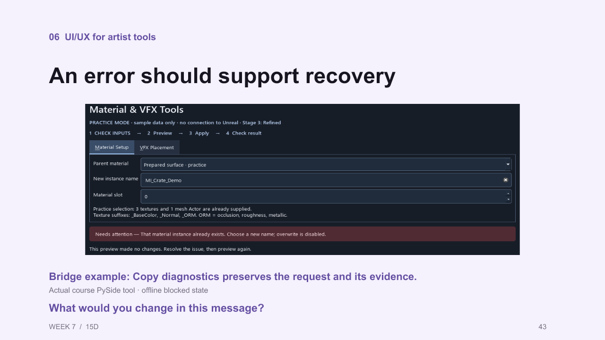

1.
v14 slide 1 · Live · Preserved
Speaker notes and sources
We will connect Python automation with the experience of the artist who uses a tool.
INSTRUCTOR PACING (not narration): Opening 30 seconds. The agenda gets another 30 seconds. The entire opening/Python/demo block ends at elapsed 32:00.
2. Today’s sequence
v14 slide 2 · Live · Preserved
v15 — slide 2
Speaker notes and sources
First we connect Python API calls to the editor and the prepared demos. After our contributors and the break, you will assess a tool, discuss its interface, and test a classmate’s work. We finish by choosing one revision supported by evidence.
Source insight (instructor):
Facilitation (not narration):
Sources:
Visual: Editable slide text/table
Review anchor: 02
3.
v14 slide 3 · Live · Preserved
Speaker notes and sources
We are beginning python in unreal. The editor host, objects and API calls. Next: inspect the inputs to an editor operation
Facilitation:
4. Python setup in Unreal
v14 slide 4 · Live · Preserved
v15 — slide 4
Speaker notes and sources
Unreal supplies the objects and editor operations behind this Python module. Enable the prepared plugins and use Python mode in the Output Log. Autocomplete in an IDE does not provide a running Unreal editor. Which part of the execution setup would you like clarified?
Source insight (instructor):
Facilitation (not narration):
Sources:
https://dev.epicgames.com/documentation/en-us/unreal-engine/scripting-the-unreal-editor-using-python?application_version=5.7
Visual: Editable slide text/table
Review anchor: 03
5. Project readiness check: 3 minutes
v14 slide 5 · Live · Preserved
v15 — slide 5
Speaker notes and sources
Take three minutes to open the intended project, choose Python in the Output Log and run this complete snippet. Confirm the greeting, engine version and project directory. Your user folder can differ from mine. This checks the Python host and project only. It does not certify the Material/VFX fixture or bridge. Tell me if you see an error or a different project.
Source insight (instructor):
Facilitation (not narration): Allow the full three minutes. Use the provided Week07UnrealPython project for the prepared demos. Address setup errors before continuing.
Sources:
https://dev.epicgames.com/documentation/en-us/unreal-engine/python-api/class/SystemLibrary?application_version=5.7
C:\Users\antho\Perforce\anthony.monteagudo_TechArt\anthony.monteagudo\Week07UnrealPython\lesson_materials\week_07_api_checkpoints\ue\UE01_host.py
Visual: Editable slide text/table
Run in Unreal. Complete example.
Review anchor: 04
6. Python in production: Crayta
v14 slide 6 · Live · Preserved
v15 — slide 6
Speaker notes and sources
This is a game-production example from Unit 2 Games, presented by Marcus White at Unreal Fest Europe 2019. The documented problem is a small team facing large asset demands. The talk describes a Python workflow for importing and conditioning assets in Unreal. Our classroom connection is repeatability: the selection, properties and checks we are about to learn can become steps in an asset pipeline. That connection is our interpretation, not a claim that our classroom script reproduces their implementation.
Source insight (instructor):
Facilitation (not narration): Open the linked primary source before class. Showcase only; no installation or new live host test was performed.
Sources:
https://www.unrealengine.com/events/unreal-fest-europe-2019/using-python-to-streamline-asset-workflows-for-a-small-team
Visual: Editable slide text/table
Review anchor: PROD1
7. Unreal Python documentation
v14 slide 7 · Live · Preserved
v15 — slide 7
Speaker notes and sources
Open the Python API reference and match the engine version. Search for the class, then the method. Read which object owns the call, the parameters, the return type and any deprecation notice. Array[Actor] tells us we can loop over actors. This is a lookup exercise: what comes back, and what can we do with it?
Source insight (instructor):
Facilitation (not narration): Predict the result before execution. Compare the editor selection and output. New examples need classroom rehearsal.
Sources:
https://dev.epicgames.com/documentation/en-us/unreal-engine/python-api/?application_version=5.7
C:/Users/antho/OneDrive/Desktop/Notes/anthony/personal/Duke Tech Art Course Notes/16 Karol UE Python Course/03 Automation Scripting/10 Getting User Selection and Listing Assets - REFINED.md
Visual: Editable slide text/table
Read the owning class, parameters, return type and deprecation notices.
Review anchor: DOCS
8. A function’s documentation
New slide · Live · Updated
Speaker notes and sources
Find the class name, function name and return type. This method returns selected Actors in the editor world. The next examples obtain the subsystem, call the function and inspect the result. Selected Content Browser assets require a different API. The screenshot shows the reference, not the result of a scene operation.
Sources:
https://dev.epicgames.com/documentation/en-us/unreal-engine/python-api/class/EditorActorSubsystem?application_version=5.7#unreal.EditorActorSubsystem.get_selected_level_actors
9. VS Code: Python autocomplete
v14 slide 8 · Live · Preserved
Speaker notes and sources
Karol separates writing code from running the editor. Open the folder containing the uproject so the next slide uses the correct relative paths. Enable Developer Mode before class and restart Unreal to generate its stub. The stub describes the API for autocomplete. It does not supply a running editor. Older course captures put this setting in Project Settings; the linked Unreal 5.7 documentation uses Editor Preferences.
Source insight (instructor):
Facilitation (not narration): Predict the result before execution. Compare the editor selection and output. New examples need classroom rehearsal.
Sources:
https://dev.epicgames.com/documentation/en-us/unreal-engine/setting-up-autocomplete-for-unreal-editor-python-scripting?application_version=5.7
https://code.visualstudio.com/docs/python/settings-reference
C:/Users/antho/OneDrive/Desktop/Notes/anthony/personal/Duke Tech Art Course Notes/16 Karol UE Python Course/01 Setup/02 VS Code Autocomplete Setup - REFINED.md
Visual: Editable slide text/table
Review anchor: VSC1
10. VS Code: workspace settings
v14 slide 9 · Live · Preserved
Speaker notes and sources
Merge these entries with existing workspace settings rather than replacing unrelated settings. Pylance reads the stub folder for Unreal names and Content/Python for our project modules. Use Python: Select Interpreter for your ordinary Python tools, but selecting an interpreter does not create an Unreal editor session. Never add the stub directory to runtime PYTHONPATH. If suggestions are absent, check the generated file and reload the VS Code window.
Source insight (instructor):
Facilitation (not narration): Predict the result before execution. Compare the editor selection and output. New examples need classroom rehearsal.
Sources:
https://dev.epicgames.com/documentation/en-us/unreal-engine/setting-up-autocomplete-for-unreal-editor-python-scripting?application_version=5.7
https://code.visualstudio.com/docs/python/settings-reference
C:/Users/antho/OneDrive/Desktop/Notes/anthony/personal/Duke Tech Art Course Notes/16 Karol UE Python Course/01 Setup/02 VS Code Autocomplete Setup - REFINED.md
Visual: Editable slide text/table
JSON settings for VS Code. Run Unreal scripts inside Unreal.
Review anchor: VSC2
11. An Unreal function call, explained
v14 slide 10 · Live · Preserved
Speaker notes and sources
Read this together with the selection example. Unreal is the module. EditorActorSubsystem names the type we request. get_editor_subsystem returns the existing editor-owned instance. We store that instance as editor and call its method. The empty parentheses mean no explicit arguments on this call. Its return is a collection, so len counts it and a for loop inspects each Actor. Karol highlights the distinction between static library calls and calls on subsystem instances.
We ask the editor for its managed subsystem instance. Older course screenshots construct EditorActorSubsystem directly; use the accessor shown here. The returned Unreal Array supports this loop directly. Converting it to a Python list is optional. What questions do you have about the class, instance or collection?
Source insight (instructor):
Facilitation (not narration): Predict the result before execution. Compare the editor selection and output. New examples need classroom rehearsal.
Sources:
https://dev.epicgames.com/documentation/en-us/unreal-engine/python-api/?application_version=5.7
C:/Users/antho/OneDrive/Desktop/Notes/anthony/personal/Duke Tech Art Course Notes/16 Karol UE Python Course/03 Automation Scripting/10 Getting User Selection and Listing Assets - REFINED.md
Visual: Editable slide text/table
Review anchor: CALL
Additional sources: Karol Kowalczyk / Tech Art Corner, refined lessons 49 and 50.
12. UE02: Level selection
v14 slide 11 · Live · Preserved
Speaker notes and sources
Run, then change the Outliner selection and rerun. Complete checkpoint shown. No previous script required. Selected Actor count, labels and class names. Empty selection prints zero. What should an empty selection print? Select both cubes. Predict the count before running.
Source insight (instructor):
Facilitation (not narration): Host: unreal. Before running: Select the target cube, then try an empty selection. Recovery: Read only. Selection is manual. Run the full saved checkpoint to jump here with a fresh namespace. Source: ue/UE02_level_selection.py
Sources:
https://dev.epicgames.com/documentation/en-us/unreal-engine/python-api/class/EditorActorSubsystem?application_version=5.7
C:\Users\antho\Perforce\anthony.monteagudo_TechArt\anthony.monteagudo\Week07UnrealPython\lesson_materials\week_07_api_checkpoints\ue\UE02_level_selection.py
Visual: Editable slide text/table
Run in Unreal. Complete example.
Review anchor: 07
13. Selection example: expected output
v14 slide 12 · Live · Preserved
Speaker notes and sources
This is expected output for the prepared classroom map, not a new captured run. UE02 reads the current selection each time. The Content Browser can stay unchanged while this result changes. If the count is wrong, inspect the selected Outliner rows before investigating the loop.
Source insight (instructor):
Facilitation (not narration): Predict the result before execution. Compare the editor selection and output. New examples need classroom rehearsal.
Sources:
https://dev.epicgames.com/documentation/en-us/unreal-engine/python-api/?application_version=5.7
C:/Users/antho/OneDrive/Desktop/Notes/anthony/personal/Duke Tech Art Course Notes/16 Karol UE Python Course/03 Automation Scripting/10 Getting User Selection and Listing Assets - REFINED.md
Visual: Editable slide text/table
Review anchor: UE02R
14. A saved example, run inside Unreal
v14 slide 13 · Live · Preserved
Speaker notes and sources
Use the same small file shown in the deck. It contains its own import and subsystem lookup so no earlier script is needed. A normal VS Code Run Python File command does not run inside Unreal. Re-executing the saved script is also different from importing a cached module again. During tool development, reload a module explicitly when needed.
If an import fails, read the traceback first. Is our module missing, or did something it imports fail? The interpreter and package folder matter. The optional Import troubleshooting example walks through that distinction. Repeated imports are cached; replacing registered callbacks needs deliberate cleanup. What questions do you have about finding or running the file?
Source insight (instructor):
Facilitation (not narration): Predict the result before execution. Compare the editor selection and output. New examples need classroom rehearsal.
Sources:
https://dev.epicgames.com/documentation/en-us/unreal-engine/python-api/?application_version=5.7
C:/Users/antho/OneDrive/Desktop/Notes/anthony/personal/Duke Tech Art Course Notes/16 Karol UE Python Course/03 Automation Scripting/10 Getting User Selection and Listing Assets - REFINED.md
Visual: Editable slide text/table
Review anchor: RUN
Additional sources: Karol Kowalczyk / Tech Art Corner, refined lessons 06–09, 17, 48.
15. Available tool: Unreal Script Editor
v14 slide 14 · Live · Preserved
Speaker notes and sources
This is a downloadable open-source tool, rather than a short teaching snippet. The repository includes the UI preview and launch instructions. It credits the original script editor and links the related Hannes Delbeke plugin. Version 0.0.3 and later use PySide6. The README marks autocomplete as unfinished, so do not promise that feature. A Qt window is not proof of native Slate docking. Open the creator’s preview to show the interface. We have not installed or tested this tool against our Unreal 5.7 classroom project.
Source insight (instructor):
Facilitation (not narration): Open the linked primary source before class. Showcase only; no installation or new live host test was performed.
Sources:
https://github.com/leixingyu/unrealScriptEditor
https://github.com/hannesdelbeke/unreal-script-editor
Visual: Editable slide text/table
Review anchor: TOOL1
16. UE03: Actor, component and mesh
v14 slide 15 · Live · Preserved
Speaker notes and sources
Setup reads the current Actor selection. This block inspects each component. First run UE03: setup. Then run the shown block(s). Component count and shared mesh path. Actors without mesh components print zero. Can one Actor have zero mesh components? Select two cubes sharing a mesh. Compare their object labels and mesh paths.
Source insight (instructor):
Facilitation (not narration): Host: unreal. Before running: Select a mesh Actor; repeat with a camera or light. Recovery: Read only. No dependency on UE02's variables. Run the full saved checkpoint to jump here with a fresh namespace. Source: ue/UE03_components.py
Sources:
https://dev.epicgames.com/documentation/en-us/unreal-engine/python-api/class/StaticMeshComponent?application_version=5.7
C:\Users\antho\Perforce\anthony.monteagudo_TechArt\anthony.monteagudo\Week07UnrealPython\lesson_materials\week_07_api_checkpoints\ue\UE03_components.py
Visual: Editable slide text/table
Run in Unreal. First run UE03: setup.
Review anchor: 07C
17. Shared asset, separate placements
v14 slide 16 · Live · Preserved
Speaker notes and sources
Both placements reference one mesh. Changing the shared mesh affects its uses. Our material demo changes only one actor component’s override. Point to the scope you would choose to preserve Actor B. What questions do you have about assets and placements?
Source insight (instructor):
Facilitation (not narration):
Sources:
https://dev.epicgames.com/documentation/en-us/unreal-engine/scripting-the-unreal-editor-using-python
Visual: Course/Visuals/Week07/shared-asset.png
The live material demo changes a component override on Actor A
Review anchor: 06A
18. UE04: Content Browser selection
v14 slide 17 · Live · Preserved
Speaker notes and sources
This selection supplies assets, independently of the Outliner. Complete checkpoint shown. No previous script required. Asset count, names, class names and object paths. Which selection supplies textures to the material tool? Select one texture and one mesh. Which class names print?
Source insight (instructor):
Facilitation (not narration): Host: unreal. Before running: Select assets in the Content Browser, independently of the Outliner. Recovery: Read only. Rerun after changing asset selection. Run the full saved checkpoint to jump here with a fresh namespace. Source: ue/UE04_asset_selection.py
Sources:
https://dev.epicgames.com/documentation/en-us/unreal-engine/python-api/class/EditorUtilityLibrary?application_version=5.7
C:\Users\antho\Perforce\anthony.monteagudo_TechArt\anthony.monteagudo\Week07UnrealPython\lesson_materials\week_07_api_checkpoints\ue\UE04_asset_selection.py
Visual: Editable slide text/table
Run in Unreal. Complete example.
Review anchor: UE04
19. Asset example: expected output
v14 slide 18 · Live · Preserved
Speaker notes and sources
Karol makes selected objects and their identity distinct. get_selected_assets is a library call that returns loaded objects. We can ask each object for its name, class and path without loading it again. These methods return values; print displays them. Changing Content Browser selection does not change Outliner selection.
Source insight (instructor):
Facilitation (not narration): Predict the result before execution. Compare the editor selection and output. New examples need classroom rehearsal.
Sources:
https://dev.epicgames.com/documentation/en-us/unreal-engine/python-api/?application_version=5.7
C:/Users/antho/OneDrive/Desktop/Notes/anthony/personal/Duke Tech Art Course Notes/16 Karol UE Python Course/03 Automation Scripting/10 Getting User Selection and Listing Assets - REFINED.md
Visual: Editable slide text/table
Review anchor: UE04R
20. Python in production: shot setup
v14 slide 19 · Live · Preserved
Speaker notes and sources
Christophe Bardoux describes M2 Animation’s workflow in this official Unreal Fest recording. Focus on automatic shot management and the Movie Render Queue interface. The talk also includes Maya exports, but our colleagues will demonstrate that subject. The important connection here is that external data can drive Unreal objects and saved settings, and artists can use those operations through an interface. This is a production case study, not a claim that the studio’s internal tools are publicly downloadable.
Source insight (instructor):
Facilitation (not narration): Open the linked primary source before class. Showcase only; no installation or new live host test was performed.
Sources:
https://www.youtube.com/watch?v=MjjkWH0eT3U
Visual: Editable slide text/table
Review anchor: PROD2
21. Texture settings: inspect first
v14 slide 20 · Live · Preserved
Speaker notes and sources
Open one prepared texture. In its Details panel, Texture contains sRGB, and Compression contains Compression Settings. Our tool reads these properties and blocks unsuitable inputs. It does not repair or save shared textures. Base color is color data. Normal and packed ORM are data maps. UE06 now checks the same _Normal suffix as the material tool. A suffix identifies a candidate, not the image contents.
Source insight (instructor):
Facilitation (not narration): Open the matching walkthrough for the exact UI locations, manual steps and expected evidence.
Sources:
https://dev.epicgames.com/documentation/en-us/unreal-engine/texture-asset-editor-in-unreal-engine?application_version=5.7
C:\Users\antho\Perforce\anthony.monteagudo_TechArt\anthony.monteagudo\Course\Slides\Week07\MaterialsWalkthrough20261013\walkthrough.html
Visual: Editable slide text/table
Content Browser: open texture > Details. Search sRGB or Compression Settings.
Review anchor: MAT1
22. UE05: Texture editor properties
v14 slide 21 · Live · Preserved
Speaker notes and sources
Read compression and sRGB. Non-texture selections are counted and skipped. Complete checkpoint shown. No previous script required. Texture/skipped counts, compression and sRGB values. Would changing a shared texture affect more than one material? Compare a normal map with a color texture.
This checkpoint only reads properties. When you later write one, use its editor setter and compare the actual result with a manual edit. Karol’s source-color-space example needed a change notification to rebuild dependent values. Reading back one field alone would miss that problem. Saving and Undo are separate decisions.
Source insight (instructor):
Facilitation (not narration): Host: unreal. Before running: Select textures; include a non-texture to test eligibility. Recovery: Read only. Shared texture assets remain unchanged. Run the full saved checkpoint to jump here with a fresh namespace. Source: ue/UE05_texture_properties.py
Sources:
https://dev.epicgames.com/documentation/en-us/unreal-engine/python-api/class/Texture?application_version=5.7
C:\Users\antho\Perforce\anthony.monteagudo_TechArt\anthony.monteagudo\Week07UnrealPython\lesson_materials\week_07_api_checkpoints\ue\UE05_texture_properties.py
Visual: Editable slide text/table
Run in Unreal. Complete example.
Review anchor: 09G
Additional sources: Karol Kowalczyk / Tech Art Corner, refined lessons 12–13.
23. Texture example: input and result
v14 slide 22 · Live · Preserved
Speaker notes and sources
The example filters selected assets with isinstance before reading texture properties. The string passed to get_editor_property names an exposed property. Its return type depends on that property. We are reading, not changing, the checkbox and compression setting. Select a mesh too to see the skipped count increase. This demonstration connects code output to the manual controls students can inspect.
Source insight (instructor):
Facilitation (not narration): Predict the result before execution. Compare the editor selection and output. New examples need classroom rehearsal.
Sources:
https://dev.epicgames.com/documentation/en-us/unreal-engine/python-api/?application_version=5.7
C:/Users/antho/OneDrive/Desktop/Notes/anthony/personal/Duke Tech Art Course Notes/16 Karol UE Python Course/03 Automation Scripting/10 Getting User Selection and Listing Assets - REFINED.md
Visual: Editable slide text/table
Review anchor: UE05R
24. UE06: Read-only validation
v14 slide 23 · Live · Preserved
Speaker notes and sources
Setup defines textures, expected compression and counters. Check prints the final totals. First run UE06: setup. Then run the shown block(s). Every mismatching _Normal texture and final checked/mismatch counts. Zero checked is explicitly inconclusive. Why does zero checked not establish a pass? Change only the suffix rule for your project. Predict which assets are eligible.
Our suffix and expected compression are project rules. Karol uses a different naming convention, and his square and allowed-size validators are separate checks. A skipped input is not a pass. A useful failure names the asset, its actual value and the expected rule.
Source insight (instructor):
Facilitation (not narration): Host: unreal. Before running: Select textures. The prepared material tool uses the suffix _Normal. Recovery: Read only. No repair or saving. Run the full saved checkpoint to jump here with a fresh namespace. Source: ue/UE06_validation_report.py
Sources:
https://dev.epicgames.com/documentation/en-us/unreal-engine/python-api/class/Texture?application_version=5.7
C:\Users\antho\Perforce\anthony.monteagudo_TechArt\anthony.monteagudo\Week07UnrealPython\lesson_materials\week_07_api_checkpoints\ue\UE06_validation_report.py
Visual: Editable slide text/table
Run in Unreal. First run UE06: setup.
Review anchor: 09H
Additional sources: Karol Kowalczyk / Tech Art Corner, refined lessons 12, 21–25.
25. Available toolkit: AYON for Unreal
v14 slide 24 · Live · Preserved
Speaker notes and sources
AYON is a broader production system with an Unreal integration. Show the Loader or Publisher screenshot in the artist guide, then the public client/ayon_unreal source. The Python integration works with an Unreal plugin; this is not a claim that the whole platform is pure Python. It requires an AYON environment and configuration, so this is a possibility showcase rather than an in-class installation. Ask students to identify the input, operation and evidence of success in a finished artist tool.
Source insight (instructor):
Facilitation (not narration): Open the linked primary source before class. Showcase only; no installation or new live host test was performed.
Sources:
https://help.ayon.app/en/help/articles/2228078-working-with-unreal-in-ayon
https://github.com/ynput/ayon-unreal
https://docs.ayon.dev/ayon-unreal/latest/autoapi/client/ayon_unreal/api/pipeline.html
Visual: Editable slide text/table
Review anchor: TOOL2
26. UE07: Disk paths and asset paths
v14 slide 25 · Live · Preserved
Speaker notes and sources
The filesystem path and Unreal object path name different things. Complete checkpoint shown. No previous script required. Project Content disk folder and loaded /Engine object path. Does loading a mesh place it in the level? Which path could a filesystem function inspect?
Source insight (instructor):
Facilitation (not narration): Host: unreal. Before running: Any Unreal project with the built-in BasicShapes cube available. Recovery: Read only. Loading the cube does not place an Actor. Run the full saved checkpoint to jump here with a fresh namespace. Source: ue/UE07_paths.py
Sources:
https://dev.epicgames.com/documentation/en-us/unreal-engine/python-api/class/EditorAssetLibrary?application_version=5.7
C:\Users\antho\Perforce\anthony.monteagudo_TechArt\anthony.monteagudo\Week07UnrealPython\lesson_materials\week_07_api_checkpoints\ue\UE07_paths.py
Visual: Editable slide text/table
Run in Unreal. Complete example.
Review anchor: 07A
27. Sharing an
editor tool
New slide · Live · Updated
Speaker notes and sources
We have inspected the running editor, selected objects and paths. Now consider how another artist would receive and use the same tool. We will separate the package structure from the check that it works outside our development setup.
Sources:
https://dev.epicgames.com/documentation/en-us/unreal-engine/plugins-in-unreal-engine?application_version=5.7
https://dev.epicgames.com/documentation/en-us/unreal-engine/scripting-the-unreal-editor-using-python?application_version=5.7
28. Python in a plugin
New slide · Live · Updated
Speaker notes and sources
A plugin descriptor identifies a package that another project can enable. Unreal adds each enabled plugin’s Content/Python folder to its import paths. The optional init_unreal.py can register an entry point. Keep registration safe to repeat. Include dependencies and the supported editor version. Here, shipping means delivering an editor tool. Editor Python does not become gameplay scripting in a cooked executable. This folder tree is an illustrative Python-only structure.
Sources:
https://dev.epicgames.com/documentation/en-us/unreal-engine/plugins-in-unreal-engine?application_version=5.7
https://dev.epicgames.com/documentation/en-us/unreal-engine/scripting-the-unreal-editor-using-python?application_version=5.7
User-supplied screenshot: TechArtCornerPlugin / ExamplePythonModule, visible course path references 5.2; exact capture build unverified.
29. A delivery another artist can use
New slide · Live · Updated
Speaker notes and sources
Copying the current native plugin folder alone is not an established self-contained delivery. Its descriptor defines a C++ Editor module for Win64 and depends on PythonScriptPlugin and Niagara. The native panel imports week07_tooling from the project Python package. A delivery must include that package and any assets it uses, and account for engine/platform builds. A PySide interface also needs a compatible library installation. Test in a separate clean project, then restart and repeat. Include setup, known limits and a removal procedure.
Sources:
https://dev.epicgames.com/documentation/en-us/unreal-engine/plugins-in-unreal-engine?application_version=5.7
Local: Week07UnrealPython/Plugins/Week07Tools/Week07Tools.uplugin and Source/Week07Tools/Private/Week07Tools.cpp
30. Python in Unreal: questions
v14 slide 26 · Live · Preserved
Speaker notes and sources
We have seen the same language call different host APIs. Connect the object, the operation and the evidence. What would you like clarified before our contributors show their tools?
Source insight (instructor):
Facilitation (not narration):
Sources:
Visual: Editable slide text/table
Review anchor: 09K
31.
v14 slide 27 · Live · Preserved
Speaker notes and sources
We have focused on Python inside Unreal. Before I hand over, here is a short comparison: Blender also exposes its scene through Python, using bpy. I will inspect one selected object, then send a geometry revision to Unreal. Our colleagues will take us further into materials and a Maya bridge.
Facilitation: Keep this as the final instructor demo immediately before the colleague handoff.
32. BL01: Blender host and selection
v14 slide 28 · Live · Preserved
Speaker notes and sources
Blender supplies bpy.context. Run this file in its Text Editor. Complete checkpoint shown. No previous script required. Blender version, mode, selection count, object names/types. Which part of the selection loop stays familiar? Select a camera and a mesh together. Predict their types.
Source insight (instructor):
Facilitation (not narration): Host: blender. Before running: Blender Text Editor, preferably the prepared BridgeCompare.blend. Recovery: Read only. Rerun freely. Run the full saved checkpoint to jump here with a fresh namespace. Source: blender/BL01_host_selection.py
Sources:
https://docs.blender.org/api/5.1/bpy.context.html
C:\Users\antho\Perforce\anthony.monteagudo_TechArt\anthony.monteagudo\Week07UnrealPython\lesson_materials\week_07_api_checkpoints\blender\BL01_host_selection.py
Visual: Editable slide text/table
Run in Blender. Complete example.
Review anchor: BL01
33. Blender bridge: one geometry revision
v14 slide 29 · Live · Preserved
Speaker notes and sources
This is the short demonstration before the handoff. Start with the prepared Blender mesh, in Object Mode, and the Unreal bridge comparison map. Publish as SM_Compare_Blender and wait for Imported. Use the prepared revised source or raise only the roof vertices by 0.4 metres along Blender Z, return to Object Mode, and publish under the same name. The two blue Unreal instances should update from 180 to 220 centimetres high. Verify their placement and existing materials. Publish the baseline again to restore the shared asset. The Maya objects are comparison fixtures; do not run the Maya publisher in this portion.
Publishing writes FBX and JSON. Sending queues an import request. Wait for Unreal’s acknowledgement, then inspect both blue placements and their shared asset. Our bridge uses files for requests and acknowledgements. Karol’s example uses HTTP Remote Control. If the send is blocked or pending, Copy diagnostics records the environment, exchange folder and request/result identities without sending another request. What proves the revision reached the intended asset?
Source insight (instructor):
Facilitation (not narration): Use the unified testing walkthrough. Resolve the recent receiver.json access-denied issue before a live send. A fresh bridge success has not been established in this revision. If blocked, use the recorded UI rehearsal and label it as recorded. Do not add a debugging detour to the handoff.
Sources:
C:\Users\antho\Perforce\anthony.monteagudo_TechArt\anthony.monteagudo\Week07UnrealPython\Docs\Bridge\UI-Rehearsal\verification.json
C:\Users\antho\Perforce\anthony.monteagudo_TechArt\anthony.monteagudo\Week07UnrealPython\Docs\Bridge\README.md
Visual: Week07UnrealPython/Docs/Bridge/UI-Rehearsal/01-blender-baseline.png
Recorded Blender UI reference. Geometry revision; materials stay in Unreal.
Review anchor: 10D
Additional sources: Karol Kowalczyk / Tech Art Corner, refined lessons 19, 46–48; week07_bridge/client.py.
34.
v14 slide 30 · Live · Preserved
Speaker notes and sources
We have seen how Python accesses Unreal objects and how a small Blender revision reaches the editor. Now our colleagues will showcase their tools, including material work in Unreal and a Maya bridge. As you watch, connect the interface to the inputs, API operations and evidence of success we just discussed.
Facilitation:
35.
v14 slide 31 · Live · Preserved
Speaker notes and sources
We are beginning break. 15 minutes. Return at 4:52 PM for Lab 1
Facilitation:
36.
v14 slide 32 · Live · Preserved
Speaker notes and sources
We are beginning lab 1
tool assessment. 8 minutes in groups. First predict. Then compare the evidence.
Facilitation:
37. Lab 1: predict the result
v14 slide 33 · Live · Preserved
Speaker notes and sources
Your group is investigating a fictional batch renamer. Give selected assets exactly one SM_ prefix, preserve the rest of each name, and leave unselected assets unchanged. First write your own predicted names. Then compare within the group. Choose a reader, recorder, evidence checker and reporter. We will look at the actual case result only after you have committed to a prediction. What needs clarification about the task?
Source insight (instructor):
Facilitation (not narration):
Sources:
C:\Users\antho\Perforce\anthony.monteagudo_TechArt\anthony.monteagudo\Course\Slides\Week07\FinalClass20261013\facilitator.html
Visual: Editable slide text/table
Review anchor: 12
38. Lab 1: evidence and a retest
v14 slide 34 · Live · Preserved
Speaker notes and sources
Two rows match the rule. The selected asset that already has a prefix gets another, and the unselected barrel changes. Write one finding using the input, expected result and observed result. Explain why it matters and name a test after a fix. We have no evidence of Undo or another run. Keep your first judgment so we can revisit it after the UX discussion.
Source insight (instructor):
Facilitation (not narration):
Sources:
C:\Users\antho\Perforce\anthony.monteagudo_TechArt\anthony.monteagudo\Course\Slides\Week07\FinalClass20261013\facilitator.html
Visual: Editable slide text/table
Review anchor: 12A
39.
v14 slide 35 · Live · Preserved
Speaker notes and sources
We are beginning ui/ux for
artist tools. 16 minutes of concepts and discussion. Revisit your Lab 1 judgment using the artist’s task
Facilitation:
40. Interface and experience
v14 slide 36 · Live · Updated
Speaker notes and sources
Return to the renamer. A success count did not make the task successful. Some problems were functional errors; a clearer interface cannot repair the wrong mutation. UX also includes understanding scope, finding results, and recovering. Your initial instinct may be sound. We are adding a more precise way to explain and investigate it.
Source insight (instructor):
Facilitation (not narration):
Sources:
https://www.nngroup.com/articles/ten-usability-heuristics/
Visual: Editable slide text/table
Review anchor: 14
Name the intended result and what must stay untouched. A completed operation can still leave the artist with the wrong result. Use those success criteria when judging labels, controls and layout.
Sources: https://www.nngroup.com/articles/ten-usability-heuristics/
https://media.gdcvault.com/gdc2018/presentations/Stewart_Jeff_BuildGreatTools.pdf#page=33
41. User stories
v14 slide 37 · Live · Updated
Speaker notes and sources
This is a classroom example of role, goal, and benefit. It starts a conversation rather than specifying a particular button. Add observable acceptance checks: the intended asset updates, the result is easy to locate, and unrelated work stays unchanged. Ask the artist about their current workflow before treating the story as a verified requirement. Include what the artist does before opening the tool and what they need to inspect afterwards. The tool window is one part of that workflow.
Source insight (instructor):
Facilitation (not narration):
Sources:
https://www.nngroup.com/articles/user-story-mapping/
https://www.gdcvault.com/play/1026441/Tools-Tutorial-Day-The-System
Visual: Editable slide text/table
Review anchor: 14B
Add context to the story: the selection, project and actions before and after the tool. A reference interface may solve a different problem. Borrow its pattern when you can explain why it fits this artist.
Sources: https://media.gdcvault.com/gdc2018/presentations/Stewart_Jeff_BuildGreatTools.pdf#page=26
https://www.nngroup.com/articles/usability-testing-101/
42. Layout and
visual hierarchy
New slide · Live · Updated
Speaker notes and sources
We have identified an artist and a successful outcome. Now look at how the interface makes the task visible. Compare grouping and representation before deciding which layout to test.
Sources:
https://learn.microsoft.com/en-us/windows/win32/uxguide/vis-layout
https://www.nngroup.com/articles/gestalt-proximity/
43. Two layouts for the same task
v14 slide 38 · Live · Updated
Speaker notes and sources
These sketches support the same import task. One keeps everything visible; the other separates decisions into steps. Predict where a novice might hesitate and where an experienced artist might want to move faster. Test that prediction before choosing a layout. Sketch a starting state, a result and a failure. Paper or linked Figma frames can test interpretation and flow. A running Unreal tool is still needed to test the actual operation.
Source insight (instructor):
Facilitation (not narration):
Sources:
https://www.nngroup.com/articles/paper-prototyping/
https://hci.stanford.edu/publications/2010/parallel-prototyping/ParallelPrototyping2010-submitted.pdf
https://help.figma.com/hc/en-us/articles/360039823894-Create-and-manage-prototype-flows
Visual: Course/Visuals/Week07/tool-layouts.png
Illustrative sketches · neither layout is a tested recommendation
Review anchor: 14D
Both sketches perform the same task. Predict where a new user might hesitate and where an experienced user might want faster repetition. Observe the attempt before choosing a layout.
Sources: https://learn.microsoft.com/en-us/windows/win32/uxguide/vis-layout
https://www.nngroup.com/articles/gestalt-proximity/
44. Layout follows the task
v14 slide 39 · Live · Updated
Speaker notes and sources
Return to the material task we tried earlier. Find the scope count, then the row naming the crate and slot. That row makes the proposed assignment inspectable. The parent and textures are part of the decision too. Which information would you need before allowing this operation on your own work?
Source insight (instructor):
Facilitation (not narration):
Sources:
C:\Users\antho\Perforce\anthony.monteagudo_TechArt\anthony.monteagudo\Week07UnrealPython\Docs\Students\START_HERE.md
Visual: Week07UnrealPython/Docs/UI/captures/material_preview.png
Detail from the current Material Setup practice interface
Review anchor: 15
Find the target, proposed changes and next action. Their grouping should help the artist inspect consequences. A layout follows the task when it supports these decisions in context, including recovery.
Sources: https://learn.microsoft.com/en-us/windows/win32/uxguide/vis-layout
https://media.gdcvault.com/gdc2018/presentations/Stewart_Jeff_BuildGreatTools.pdf#page=43
45. Spacing and grouping
New slide · Live · Updated
Speaker notes and sources
The same fields can suggest different groups. The spacing supplies a relationship before we read every label. Transfer that idea to the target, proposed changes and actions in our tool. Grouping is supported by NN/G and Microsoft desktop guidance, and Stewart discusses grouping for content tools. Those sources support the principle; we still need to test our arrangement.
Sources:
https://www.nngroup.com/articles/gestalt-proximity/
https://learn.microsoft.com/en-us/windows/win32/uxguide/vis-layout
https://media.gdcvault.com/gdc2018/presentations/Stewart_Jeff_BuildGreatTools.pdf#page=25
46. The artist’s model of the work
v14 slide 40 · Live · Updated
Speaker notes and sources
Stewart’s Cinematic Builder example contrasts an artist-facing VFX duration with underlying spawn and kill keyframes. The artist wants to reason about when an effect begins and how long it lasts. Exposing two unrelated implementation events made that task harder to understand. This does not mean hiding all technical detail: expose details when they support the user’s next decision. For our importer, a meaningful revised-prop result may be more useful than a list of internal package operations.
Source insight (instructor): Vicarious Visions PDF p.35. Ask students for another representation mismatch: component override versus shared material asset is a useful course example.
Facilitation (not narration):
Sources:
https://media.gdcvault.com/gdc2018/presentations/Stewart_Jeff_BuildGreatTools.pdf
Visual: Course/Slides/Week07/ExpandedDeck20261013/assets/vv-content-model.png
Jeff Stewart · Vicarious Visions · GDC 2018 · PDF p.35
Review anchor: 14F
The implementation is how the system works. The artist’s mental model is how they understand the task. The interface represents that work. Stewart explicitly draws on Nielsen’s heuristic, then applies it to a production content tool. This example shows that application; it does not establish a universal best layout.
Sources: https://www.nngroup.com/articles/ten-usability-heuristics/
https://media.gdcvault.com/gdc2018/presentations/Stewart_Jeff_BuildGreatTools.pdf#page=35
47. State and feedback
v14 slide 41 · Live · Updated
Speaker notes and sources
Completed tells us that this operation returned successfully. The table changes to applied rows, and Apply becomes unavailable because the plan has been consumed. We still inspect the affected target and protected scope. A completion message alone does not establish that the user achieved the intended task.
Source insight (instructor):
Facilitation (not narration):
Sources:
C:\Users\antho\Perforce\anthony.monteagudo_TechArt\anthony.monteagudo\Week07UnrealPython\Docs\Students\START_HERE.md
Visual: Week07UnrealPython/Docs/UI/captures/material_complete.png
Detail from the current Material Setup practice interface
Review anchor: 15A
Read the completion message, then inspect the affected targets. Check the operation that actually ran. One successful operation does not establish that every other tool or bridge is ready.
Sources: https://www.nngroup.com/articles/ten-usability-heuristics/
48. A UI state becomes a Qt decision
v14 slide 42 · Live · Preserved
Speaker notes and sources
This is the current assistant interface. A pending preview must exist. If it contains warnings, the user must acknowledge them before Apply becomes available. The session still rechecks the operation when Apply runs. Enabling a button does not replace backend validation, and acknowledging a warning cannot bypass a hard limit. This UI fragment requires the surrounding widget instance. Use the checkpoint guide for independently runnable Unreal and Blender examples.
Source insight (instructor):
Facilitation (not narration):
Sources:
C:\Users\antho\Perforce\anthony.monteagudo_TechArt\anthony.monteagudo\Week07UnrealPython\Content\Python\week07_tooling\ui\assistants.py
Visual: Editable slide text/table
Requires the surrounding widget class.
Review anchor: 15G
49. An error should support recovery
v14 slide 43 · Live · Updated
v14 — slide 43
v15 — slide 49 Speaker notes and sources
Read the message as an artist who has not seen the code. Can you identify the problem, the affected input, and the next action? A raw exception may help the developer, but the artist also needs a way to resume the task.
The bridge now offers Copy diagnostics. It copies the active environment, exchange folder, receiver identity and request result. It leaves the current operation in place. We can attach that report to reproduction steps before deciding whether to retry.
Source insight (instructor):
Facilitation (not narration):
Sources:
https://www.nngroup.com/articles/ten-usability-heuristics/
Visual: Week07UnrealPython/Docs/UI/captures/material_blocked.png
Actual course PySide tool · offline blocked state
Review anchor: 15D
Additional sources: Karol Kowalczyk / Tech Art Corner, refined lessons 37, 46, 48; week07_bridge/client.py.
Name the problem, identify the input and offer a workable next action. Preserve diagnostic details for investigation. Copy diagnostics remains available without rerunning the bridge operation.
Sources: https://learn.microsoft.com/en-us/windows/win32/uxguide/mess-error
https://www.nngroup.com/articles/ten-usability-heuristics/
https://media.gdcvault.com/gdc2018/presentations/Stewart_Jeff_BuildGreatTools.pdf#page=46
50. An actionable error message
New slide · Live · Updated
Speaker notes and sources
This message identifies the failed operation, its cause and a next action. Compare that structure with our blocked-state message. Keep technical diagnostics available, but give the artist a route back to the task. The old Windows styling is not a template for our Unreal panel.
Sources:
https://learn.microsoft.com/en-us/windows/win32/uxguide/mess-error
https://www.nngroup.com/articles/ten-usability-heuristics/
51. Recovery and accessibility
v14 slide 44 · Live · Updated
Speaker notes and sources
Recovery can mean Undo for an editor transaction, or a separate restore and reimport procedure. Do not promise that all operations can be undone. The code excerpt names the preview for accessibility; it is one implementation detail, not a complete accessibility guarantee. Check keyboard operation, visible focus, readable text, and status cues that do not rely on color alone. This UI fragment requires the surrounding widget instance. Use the checkpoint guide for independently runnable Unreal and Blender examples.
Cancellation stops future work at the next check. It does not undo changes already made. A transaction groups supported editor edits, while file export and import need their own recovery procedure. Explore further in Progress, cancellation and Undo, K5.
Source insight (instructor):
Facilitation (not narration):
Sources:
https://ryandowlingsoka.com/unreal/batch-rename-tool/
https://developer.microsoft.com/en-us/games/events/gdc/2023/accessible-and-inclusive-developer-tools/
https://doc.qt.io/qtforpython-6/tutorials/
C:\Users\antho\Perforce\anthony.monteagudo_TechArt\anthony.monteagudo\Week07UnrealPython\Content\Python\week07_tooling\ui\views.py
Visual: Editable slide text/table
Requires the surrounding widget class.
Review anchor: 15B
Additional sources: Karol Kowalczyk / Tech Art Corner, refined lessons 33–34.
Visible controls support learning. Keyboard access supports users who cannot or prefer not to use a mouse. Check focus, readable labels and status cues beyond color. Mobile thumb-reach rules do not describe a desktop Unreal panel.
Sources: https://learn.microsoft.com/en-us/windows/apps/develop/input/keyboard-accelerators
https://www.nngroup.com/articles/ten-usability-heuristics/
52. Visible commands and shortcuts
New slide · Live · Updated
Speaker notes and sources
Support an artist learning the tool and an artist repeating a task. Place shortcut information beside the command where possible. Make focus and scope predictable. A key should not unexpectedly act on a different panel or selection. These example keys demonstrate the pattern; they are not bindings we added to the classroom tool.
Sources:
https://learn.microsoft.com/en-us/windows/apps/develop/input/keyboard-accelerators
https://www.nngroup.com/articles/ten-usability-heuristics/
53. Color and
readability
New slide · Live · Updated
Speaker notes and sources
We will use color to direct attention and communicate state, then connect those choices to later material and VFX work. Begin with meaning and readability in the interface.
Sources:
https://spectrum.adobe.com/page/color-fundamentals/
https://www.w3.org/WAI/WCAG22/Understanding/use-of-color.html
54. Color communicates with labels
New slide · Live · Updated
Speaker notes and sources
A red border can attract attention, but a label tells us what is wrong and what to do next. Use consistent color roles and additional cues. Test readability against the real panel background in each supported theme. W3C guidance supports redundant meaning and contrast; its web criteria do not certify this desktop tool. Adobe Spectrum applies those principles in a product design system.
Sources:
https://spectrum.adobe.com/page/color-fundamentals/
https://www.w3.org/WAI/WCAG22/Understanding/use-of-color.html
https://www.w3.org/WAI/WCAG22/Understanding/contrast-minimum.html
55. Color choices and rendering context
New slide · Live · Updated
Speaker notes and sources
Hue, saturation and value are useful control coordinates, but HSV value is not a complete measure of perceived brightness. Choose a dominant palette and a purposeful accent, then inspect them against the actual background. The picker also distinguishes linear and sRGB representations. Later shader and VFX work adds scene lighting and exposure. Compare like-for-like conditions before attributing a difference to the chosen color. This screenshot is a labeled historical control reference, not a new engine capture.
Sources:
https://dev.epicgames.com/documentation/en-us/unreal-engine/color-picker?application_version=4.27
https://spectrum.adobe.com/page/color-fundamentals/
https://helpx.adobe.com/photoshop/desktop/adjust-color/choose-colors/choose-colors-with-the-adobe-color-picker.html
56. Testing and
workflow evidence
New slide · Live · Updated
Speaker notes and sources
Now connect the interface choices to evidence. We will look at a production iteration, distinguish observation from explanation, then consider what usage events can add before the peer test.
Sources:
https://www.nngroup.com/articles/usability-testing-101/
https://media.gdcvault.com/gdc2025/Slides/Palmer-Campbell_Etienne_MissionKontrolRevolutionizing.pdf
57. Feedback changes the interface
v14 slide 45 · Live · Updated
v14 — slide 45 v15 — slide 57
v15 — slide 57 Speaker notes and sources
QA feedback led Mission Kontrol to add controls for both players and frame stepping. Previously, debug actions could depend on gamepad combinations, but someone working in the tool might not be holding a gamepad. The lesson is specific: look at adjacent actions required to finish the task. A technically functional panel can still force awkward handoffs. Ask your tester what they need immediately before and after the operation, then observe whether the interface supports those steps. Mission Kontrol is NetherRealm’s Unreal-based developer tool for repeatable character actions. It uses Slate and game automation rather than our Python editor recipe.
Source insight (instructor): Mission Kontrol PDF p.47. This is a documented iteration after QA feedback, not evidence that a particular layout is universally best.
Facilitation (not narration):
Sources:
https://media.gdcvault.com/gdc2025/Slides/Palmer-Campbell_Etienne_MissionKontrolRevolutionizing.pdf
Visual: Course/Slides/Week07/ExpandedDeck20261013/assets/mk-feedback.png
Etienne Palmer-Campbell · NetherRealm · GDC 2025 · PDF p.47
Review anchor: 16C
Observe the surrounding workflow. Mission Kontrol’s QA feedback led to both-player actions and frame stepping where people were already working. This is a documented production iteration, not a controlled comparison or a Python tool.
Sources: https://media.gdcvault.com/gdc2025/Slides/Palmer-Campbell_Etienne_MissionKontrolRevolutionizing.pdf#page=47
https://www.nngroup.com/articles/usability-testing-101/
58. A test produces the next question
v14 slide 46 · Live · Updated
v14 — slide 46 v15 — slide 58
v15 — slide 58 Speaker notes and sources
An observation gives you evidence. Your explanation is still a hypothesis. Make one change that addresses it and repeat the task. If the difficulty remains, revise the explanation rather than merely adding more instructions. For example, the tester chose the wrong destination. That is the observation. An unclear label is a possible explanation. Showing the full path is a proposed change, and a new tester’s attempt is the retest. What questions do you have before writing your own task?
For automated checks, also prove that a deliberately failing expectation is detected. A discovered file that never calls its checks gives no evidence about those checks. Explore further in Tests that detect failure, K6.
Source insight (instructor):
Facilitation (not narration):
Sources:
https://www.nngroup.com/articles/usability-testing-101/
https://www.nngroup.com/articles/task-scenarios-usability-testing/
Visual: Course/Visuals/Week07/test-loop.png
Course testing loop · a possible explanation is not yet a finding
Review anchor: 16E
Additional sources: Karol Kowalczyk / Tech Art Corner, refined lessons 35–38.
If a tester misses a destination, record that observation. An unclear label or grouping is a possible explanation. Change one thing and repeat the task with a fresh tester. Usage data can help choose where to investigate, but observation helps explain the difficulty.
Sources: https://www.nngroup.com/articles/usability-testing-101/
https://media.gdcvault.com/gdc2025/Slides/Palmer-Campbell_Etienne_MissionKontrolRevolutionizing.pdf
59. Telemetry and observation
New slide · Live · Updated
Speaker notes and sources
Start with a workflow question. Usage data can describe events, errors and operation duration. It cannot by itself explain why an artist hesitated or prove the final asset is correct. Watch a representative task before choosing a fix. Analytics and usability testing are complementary. Nothing in this lesson enables collection in the demo tools.
Sources:
https://www.nngroup.com/articles/quantitative-user-research-methods/
https://www.nngroup.com/articles/usability-testing-101/
60. A small event plan
New slide · Live · Updated
Speaker notes and sources
Begin with a few meaningful events. Count distinct runs, not repeated clicks, and report cancellations separately. Code duration differs from the whole time a person spends completing a task. Use explicit local test logging if we implement this later, with anonymous run IDs and task-relevant fields. Avoid personal names and asset paths unless a justified investigation needs them. A few classroom attempts give useful observations, not reliable population percentages. Inspect the result to establish task success.
Sources:
https://www.nngroup.com/articles/quantitative-user-research-methods/
https://www.nngroup.com/articles/usability-testing-101/
61.
v14 slide 47 · Live · Preserved
Speaker notes and sources
Now prepare the task your classmates will attempt. Use the preparation sheet. Give a goal and enough context to begin, and define how to return to the same starting state.
Facilitation:
62. Your peer-test task
v14 slide 48 · Live · Preserved
Speaker notes and sources
Use the preparation sheet to write one task that fits a two-minute attempt. For example, give these three selected props exactly one prefix while leaving the unselected light unchanged. Define success and how you will restore the same input. Declare hands-on, recorded or concept review. Keep the same task and version across rounds so we can compare observations. If you have no runnable tool, sketch the input, action and intended output. Which part of your task needs clarification?
Source insight (instructor):
Facilitation (not narration):
Sources:
C:\Users\antho\Perforce\anthony.monteagudo_TechArt\anthony.monteagudo\Course\Slides\Week07\FinalClass20261013\preparation.html
Visual: Editable slide text/table
Review anchor: 16A
63.
v14 slide 49 · Live · Preserved
Speaker notes and sources
We are beginning lab 2
peer testing. 35 minutes including briefing and three rounds. Each author receives evidence from three classmates
Facilitation:
64. Lab 2: three peer reviews
v14 slide 50 · Live · Preserved
Speaker notes and sources
Each person reviews three classmates in a group of four. Use the author’s prepared machine. The author gives the goal and necessary domain information, then lets the reviewer attempt it. Say what you expect and record any help. Use the same task and version each round. If launch is blocked for a minute, record the blocker and switch to your declared recording or concept. That evidence cannot establish untested execution. Ask now if the roles are unclear.
Source insight (instructor):
Facilitation (not narration):
Sources:
C:\Users\antho\Perforce\anthony.monteagudo_TechArt\anthony.monteagudo\Course\Slides\Week07\FinalClass20261013\peer-sheet.html
Visual: Editable slide text/table
Review anchor: 17
65. A ten-minute reciprocal round
v14 slide 51 · Live · Preserved
Speaker notes and sources
In each pair the later letter tests the earlier letter’s tool first. You have thirty seconds for the goal, two minutes for the attempt, then ninety seconds to record and explain your finding. At four minutes swap roles. At eight minutes finish both sheets and reset. Record a supported strength. If no fault appeared, say so and propose a useful next test.
Source insight (instructor):
Facilitation (not narration):
Sources:
https://www.nngroup.com/articles/usability-testing-101/
C:\Users\antho\Perforce\anthony.monteagudo_TechArt\anthony.monteagudo\Course\Slides\Week07\FinalClass20261013\facilitator.html
Visual: Editable slide text/table
Review anchor: 18
66. Partner rotations
v14 slide 52 · Live · Preserved
Speaker notes and sources
Stay within your group and follow these pairings. The later letter tests the earlier letter’s tool first. Both authors receive a review before you change partners. Give your sheet to the author immediately. If a round is interrupted, label the review incomplete. Three distinct classmates are possible in a full group of four. Tell me now if your group needs a different arrangement.
Source insight (instructor):
Facilitation (not narration):
Sources:
C:\Users\antho\Perforce\anthony.monteagudo_TechArt\anthony.monteagudo\Course\Slides\Week07\FinalClass20261013\facilitator.html
Visual: Editable slide text/table
Review anchor: 19
67.
v14 slide 53 · Live · Preserved
Speaker notes and sources
The attempts are complete. Compare your evidence before choosing what to change. Keep a supported strength and identify the next test.
Facilitation:
68. One revision supported by evidence
v14 slide 54 · Live · Preserved
Speaker notes and sources
Read the three reviews you received. Choose a priority because of its consequence and evidence, not simply the number of votes. Preserve one thing that worked. Write the smallest useful revision or experiment and exactly how you would retest it. If feedback conflicts, compare tasks, versions, review modes and help before deciding. You may keep your initial design if the evidence supports it. Record any unresolved question.
Source insight (instructor):
Facilitation (not narration):
Sources:
C:\Users\antho\Perforce\anthony.monteagudo_TechArt\anthony.monteagudo\Course\Slides\Week07\FinalClass20261013\reflection.html
Visual: Editable slide text/table
Review anchor: 20
69.
v14 slide 55 · Hidden reference · Preserved
Speaker notes and sources
We now use those API ideas in our prepared tools. Predict which objects may change before each operation. Watch the result and the recovery separately.
Facilitation: Optional depth. Material tools and Maya bridging are covered by colleagues; keep this as a reference, not a duplicate instructor demonstration.
70. Material instance: set texture inputs
v14 slide 56 · Hidden reference · Preserved
Speaker notes and sources
Create a material instance from the prepared parent and open it. Enable each texture parameter override and choose the matching texture. The tool sets the same parent and three texture references, then reads them back. It does not build a shader graph or set separate roughness and metallic sliders. The prepared parent routes the ORM channels. Save intentionally after review; the demo backend leaves the new instance as a draft.
Source insight (instructor):
Facilitation (not narration): Optional depth. Material tools and Maya bridging are covered by colleagues; keep this as a reference, not a duplicate instructor demonstration.
Sources:
https://dev.epicgames.com/documentation/en-us/unreal-engine/unreal-engine-material-instance-editor-ui?application_version=5.7
C:\Users\antho\Perforce\anthony.monteagudo_TechArt\anthony.monteagudo\Course\Slides\Week07\MaterialsWalkthrough20261013\walkthrough.html
Visual: Editable slide text/table
Right-click M_PreparedSurface > Create Material Instance. Open it > Parameter Groups.
Review anchor: MAT2
71. UE08: One material override
v14 slide 57 · Hidden reference · Preserved
Speaker notes and sources
Run UE08 Setup and Eligibility first. The full file checks the resulting slot. First run UE08: setup + eligibility. Then run the shown block(s). Target slot zero changes; old/new materials print. Protected cube remains unchanged. What happens if this material is already assigned? Try selecting the protected cube. Confirm the check blocks before editing.
Source insight (instructor):
Facilitation (not narration): Optional depth. Material tools and Maya bridging are covered by colleagues; keep this as a reference, not a duplicate instructor demonstration.
Sources:
https://dev.epicgames.com/documentation/en-us/unreal-engine/python-api/class/ScopedEditorTransaction?application_version=5.7
C:\Users\antho\Perforce\anthony.monteagudo_TechArt\anthony.monteagudo\Week07UnrealPython\lesson_materials\week_07_api_checkpoints\ue\UE08_material_override.py
Visual: Editable slide text/table
Run in Unreal. First run UE08: setup, eligibility.
Review anchor: 09I
72. Assign a material manually
v14 slide 58 · Hidden reference · Preserved
Speaker notes and sources
In Unreal select the target Actor, then its mesh component. In Details under Materials, choose the material in Element 0. That is the manual equivalent of set_material with slot zero. Inspect the protected cube and Undo once. Maya assigns a shading network through a shading group. Blender uses material slots, which may link to shared mesh data or the object. These are related tasks with different data models. The bridge preserves Unreal assignments rather than rebuilding source shader networks.
Source insight (instructor):
Facilitation (not narration): Optional depth. Material tools and Maya bridging are covered by colleagues; keep this as a reference, not a duplicate instructor demonstration.
Sources:
https://help.autodesk.com/cloudhelp/2027/ENU/Maya-LightingShading/files/GUID-D41AF807-F7CB-447E-BACC-7F0867C14E8D.htm
https://docs.blender.org/manual/en/latest/render/materials/assignment.html
C:\Users\antho\Perforce\anthony.monteagudo_TechArt\anthony.monteagudo\Course\Slides\Week07\MaterialsWalkthrough20261013\walkthrough.html
Visual: Editable slide text/table
UE08 changes a component override. Changing the shared mesh default has wider scope.
Review anchor: MAT3
73. Material Setup: a reviewed change
v14 slide 59 · Hidden reference · Preserved
Speaker notes and sources
First I leave one texture out. Preview blocks the operation before changing the scene. I restore the complete texture selection and preview again. Read the target, slot and texture mapping. Apply changes the target cube while the other cube and shared mesh stay unchanged. Undo restores the assignment. The new material instance remains for separate cleanup. What questions do you have about the result and recovery? UE08 separately demonstrates assignment of an already existing material. This full assistant also creates and verifies an instance. These are deliberately different scopes.
Source insight (instructor):
Facilitation (not narration): Optional depth. Material tools and Maya bridging are covered by colleagues; keep this as a reference, not a duplicate instructor demonstration.
Sources:
C:\Users\antho\Perforce\anthony.monteagudo_TechArt\anthony.monteagudo\Course\Slides\Week07\FinalClass20261013\live-demo.html
C:\Users\antho\Perforce\anthony.monteagudo_TechArt\anthony.monteagudo\Course\Slides\Week07\FinalClass20261013\Documents\Week 7 Live Demo Run Sheet.docx
Visual: Course/Slides/Week07/FinalClass20261013/live-captures/02_material.png
Actual Unreal 5.7.4 result from the current tool
Review anchor: 09
74. PY01: A preview snapshot
v14 slide 60 · Hidden reference · Preserved
Speaker notes and sources
Ordinary Python teaching data. A changed target invalidates the reviewed copy. Complete checkpoint shown. No previous script required. The changed target differs from the reviewed copy, so BLOCKED prints. Which line makes the preview stale? Comment out the target change and predict the other branch.
Source insight (instructor):
Facilitation (not narration): Optional depth. Material tools and Maya bridging are covered by colleagues; keep this as a reference, not a duplicate instructor demonstration.
Sources:
C:\Users\antho\Perforce\anthony.monteagudo_TechArt\anthony.monteagudo\Week07UnrealPython\lesson_materials\week_07_api_checkpoints\python\PY01_preview_snapshot.py
Visual: Editable slide text/table
Run in Python. Complete example.
Review anchor: 09F
75. Two interfaces, one Python workflow
v14 slide 61 · Hidden reference · Preserved
Speaker notes and sources
The current native Unreal panel uses Slate. The other interface uses PySide. Both call the same Python workflow. An Editor Utility Blueprint is another possible entry point, but it is not the implementation of our current panel. Which rules should remain unchanged if we redesign the interface?
Reusable workflow logic should not import the window that calls it. That direction helps avoid circular imports and lets another interface reuse the operation. The bridge follows the same idea with shared Publisher logic and separate Blender and Maya adapters.
Source insight (instructor):
Facilitation (not narration): Optional depth. Material tools and Maya bridging are covered by colleagues; keep this as a reference, not a duplicate instructor demonstration.
Sources:
https://dev.epicgames.com/documentation/en-us/unreal-engine/scripting-the-unreal-editor-using-python
https://dev.epicgames.com/documentation/en-us/unreal-engine/editor-utility-widgets-in-unreal-engine
https://doc.qt.io/qtforpython-6/tutorials/
C:\Users\antho\Perforce\anthony.monteagudo_TechArt\anthony.monteagudo\Week07UnrealPython\Content\Python\week07_tooling\workflows.py
C:\Users\antho\Perforce\anthony.monteagudo_TechArt\anthony.monteagudo\Week07UnrealPython\Docs\UI\UNREAL_NATIVE_UI.md
Visual: Editable slide text/table
Review anchor: 08A
Additional sources: Karol Kowalczyk / Tech Art Corner, refined lessons 39, 48.
76. UE10: Niagara component inspection
v14 slide 62 · Hidden reference · Preserved
Speaker notes and sources
Setup reads selected Actors. Inspect the effects after the prepared VFX tool places them. First run UE10: setup. Then run the shown block(s). Niagara component counts and referenced system paths. No effects are spawned. Does a system reference tell us its frame cost? Would three successful placements establish GPU frame cost?
Source insight (instructor):
Facilitation (not narration): Optional depth. Material tools and Maya bridging are covered by colleagues; keep this as a reference, not a duplicate instructor demonstration.
Sources:
https://dev.epicgames.com/documentation/en-us/unreal-engine/python-api/class/NiagaraComponent?application_version=5.7
C:\Users\antho\Perforce\anthony.monteagudo_TechArt\anthony.monteagudo\Week07UnrealPython\lesson_materials\week_07_api_checkpoints\ue\UE10_niagara_components.py
Visual: Editable slide text/table
Run in Unreal. First run UE10: setup.
Review anchor: 09J
77. VFX Placement: transfer the workflow
v14 slide 63 · Hidden reference · Preserved
Speaker notes and sources
The three tagged markers define this placement. We choose VFX Placement, scale one, and Preview. The plan names three effects and their positions. Apply creates three visible fountains. Previewing these occupied anchors again blocks a second batch. Undo removes the placed effects and leaves the pedestals. These checks establish placement behavior and recovery in this fixture. They do not measure frame cost on target hardware. What questions remain about performance or wider production use? Run UE10 afterward when you want to inspect the resulting component/system references directly.
Source insight (instructor):
Facilitation (not narration): Optional depth. Material tools and Maya bridging are covered by colleagues; keep this as a reference, not a duplicate instructor demonstration.
Sources:
C:\Users\antho\Perforce\anthony.monteagudo_TechArt\anthony.monteagudo\Course\Slides\Week07\FinalClass20261013\live-demo.html
C:\Users\antho\Perforce\anthony.monteagudo_TechArt\anthony.monteagudo\Course\Slides\Week07\FinalClass20261013\Documents\Week 7 Live Demo Run Sheet.docx
Visual: Course/Slides/Week07/FinalClass20261013/live-captures/03_vfx.png
Actual Unreal result with the reviewed classroom fountain
Review anchor: 09D
78. BL02: Object and mesh data
v14 slide 64 · Hidden reference · Preserved
Speaker notes and sources
An Object has a transform. Its mesh datablock may have several users. Complete checkpoint shown. No previous script required. Object location, mesh datablock name/users and source polygon count. What would editing shared mesh data affect? With linked duplicates, compare Object names and mesh data names.
Source insight (instructor):
Facilitation (not narration): Optional depth. Material tools and Maya bridging are covered by colleagues; keep this as a reference, not a duplicate instructor demonstration.
Sources:
https://docs.blender.org/api/5.1/bpy.types.Object.html
C:\Users\antho\Perforce\anthony.monteagudo_TechArt\anthony.monteagudo\Week07UnrealPython\lesson_materials\week_07_api_checkpoints\blender\BL02_object_mesh.py
Visual: Editable slide text/table
Run in Blender. Complete example.
Review anchor: BL02
79. Maya and Blender publishing
v14 slide 65 · Hidden reference · Preserved
Speaker notes and sources
The two hosts publish the same contract: an FBX file and a manifest. Unreal checks and imports the revision. Each colored pair references one shared mesh. Our prepared revision raises the roof from 180 to 220 centimeters. Predict which pair will update and which transforms should stay the same. This bridge handles one static mesh and explicit publishing. It does not stream rigging or animation. The short BL01 and BL02 checkpoints explain the Blender host boundary. The production bridge additionally handles transformation, unit, pivot and transport concerns. Its complete publisher is the capstone, not the first API exercise.
Source insight (instructor):
Facilitation (not narration): Optional depth. Material tools and Maya bridging are covered by colleagues; keep this as a reference, not a duplicate instructor demonstration.
Sources:
https://isaacoster.artstation.com/projects/Dvdrke
https://dev.epicgames.com/documentation/en-us/unreal-engine/python-api/class/AssetImportTask?application_version=5.7
C:\Users\antho\Perforce\anthony.monteagudo_TechArt\anthony.monteagudo\Week07UnrealPython\Docs\Bridge\README.md
C:\Users\antho\Perforce\anthony.monteagudo_TechArt\anthony.monteagudo\Week07UnrealPython\Docs\Bridge\verification.json
Visual: Week07UnrealPython/Docs/Bridge/unreal-comparison.png
Actual Unreal comparison map. Orange: Maya. Blue: Blender.
Review anchor: 10
80.
v14 slide 66 · Hidden reference · Preserved
Speaker notes and sources
Both buttons call the same Publisher class. We do not maintain a Blender copy of the naming rules, JSON writer, transport or Unreal importer. We substitute BlenderAdapter for MayaAdapter. Each adapter has just two entry points: inspect_selection and export_fbx.
Blender reads a selected object through bpy and evaluates its modifiers into a disposable mesh. Maya reads a mesh transform through cmds, duplicates it and freezes the duplicate. Neither path applies those changes to the original mesh. Blender converts its scene scale to centimeters and uses the object origin. Maya requires centimeter working units and uses the rotate pivot. The adapter handles axis conversion before the shared receiver sees the asset.
Now follow the click. The shared core validates, exports the FBX, hashes it and commits the JSON manifest. Send queues a request for the running receiver session. Unreal checks that pair, imports into the stable asset path, verifies dimensions and saves. A response travels back to the publisher. Sent means queued. Imported means the receiver reported success.
The two placed props share one Unreal asset. Keep the name and destination stable and a new revision updates both placements without replacing either Actor. Try the matching roof edit in Maya: forty centimeters on Y. In the supplied Blender scene it was point four meters on Z. Both revised assets should be 220 centimeters high.
The status and recovery rules are shared as well. Publish alone never sends. A failed export cannot leave an older revision selected for sending. While an acknowledgement is pending, another send is blocked. Changing the exchange folder clears local tracking; it does not cancel work already queued in the old folder.
One qualification: parity here means the same publishing contract and intended geometry. FBX triangulation and smoothing can differ. The screenshots show different smoothing, so compare shape, dimensions and pivot separately from shading.
Which code stays unchanged when we switch applications? What would you like us to trace together before the live revision?
Facilitation: Optional depth. Material tools and Maya bridging are covered by colleagues; keep this as a reference, not a duplicate instructor demonstration.
Sources:
C:\Users\antho\Perforce\anthony.monteagudo_TechArt\anthony.monteagudo\Week07UnrealPython\Docs\Bridge\parity.html
C:\Users\antho\Perforce\anthony.monteagudo_TechArt\anthony.monteagudo\Course\Slides\Week07\BridgeRehearsal20261013\output\Maya_Blender_Bridge_Parity_v2.pptx
81. UE11: Prepare an import task
v14 slide 67 · Hidden reference · Preserved
Speaker notes and sources
UE11 Setup defines paths. These FbxImportUI options describe a static-mesh import. First run UE11: setup. Then run the shown block(s). Prepared source and destination. No new Unreal asset. Which setting prevents new materials from being imported? Change destination_name in this preparation-only example. What would it identify?
Source insight (instructor):
Facilitation (not narration): Optional depth. Material tools and Maya bridging are covered by colleagues; keep this as a reference, not a duplicate instructor demonstration.
Sources:
https://dev.epicgames.com/documentation/en-us/unreal-engine/python-api/class/AssetImportTask?application_version=5.7
C:\Users\antho\Perforce\anthony.monteagudo_TechArt\anthony.monteagudo\Week07UnrealPython\lesson_materials\week_07_api_checkpoints\ue\UE11_import_task.py
Visual: Editable slide text/table
Run in Unreal. First run UE11: setup.
Review anchor: 10C
82. UE11: Prepare an import task
v14 slide 68 · Hidden reference · Preserved
Speaker notes and sources
Run UE11 Setup and Options first. This block prepares a task without importing. First run UE11: setup + options. Then run the shown block(s). Prepared source and destination. No new Unreal asset. Which line would permit an overwrite? Change destination_name in this preparation-only example. What would it identify?
Source insight (instructor):
Facilitation (not narration): Optional depth. Material tools and Maya bridging are covered by colleagues; keep this as a reference, not a duplicate instructor demonstration.
Sources:
https://dev.epicgames.com/documentation/en-us/unreal-engine/python-api/class/AssetImportTask?application_version=5.7
C:\Users\antho\Perforce\anthony.monteagudo_TechArt\anthony.monteagudo\Week07UnrealPython\lesson_materials\week_07_api_checkpoints\ue\UE11_import_task.py
Visual: Editable slide text/table
Run in Unreal. First run UE11: setup, options.
Review anchor: 10A
83. UE12: Import and inspect
v14 slide 69 · Hidden reference · Preserved
Speaker notes and sources
Run the full UE12 checkpoint. It repeats setup and refuses an existing destination. First run UE12: setup + options + task + eligibility. Then run the shown block(s). One unsaved StaticMesh at the exact lesson path, returned paths and bounds. Why restore the previous importer setting even after failure? Compare printed bounds with the supplied wedge's 120 x 60 x 180 cm reference. No size check is implied by file existence.
Source insight (instructor):
Facilitation (not narration): Optional depth. Material tools and Maya bridging are covered by colleagues; keep this as a reference, not a duplicate instructor demonstration.
Sources:
https://dev.epicgames.com/documentation/en-us/unreal-engine/python-api/class/AssetImportTask?application_version=5.7
C:\Users\antho\Perforce\anthony.monteagudo_TechArt\anthony.monteagudo\Week07UnrealPython\lesson_materials\week_07_api_checkpoints\ue\UE12_import_and_verify.py
Visual: Editable slide text/table
Run in Unreal. First run UE12: setup, options, task, eligibility.
Review anchor: UE12
84.
v14 slide 70 · Hidden reference · Preserved
Speaker notes and sources
These slides support later study and specific questions.
Facilitation: Optional reference, outside the 150-minute route. Optional reference.
85. What you should be able to explain
v14 slide 71 · Hidden reference · Preserved
Speaker notes and sources
By the end, you should be able to explain scope, evidence, and the user’s task. A script finishing without an exception is only one part of success. Keep one tool from your own work in mind as we go.
Source insight (instructor):
Facilitation (not narration): Optional reference, outside the 150-minute route. Optional reference.
Sources:
https://www.nngroup.com/articles/ten-usability-heuristics/
Visual: Course/Slides/Week07/UnrealPythonDemo/Captures/02_organized.png
Course Unreal fixture · scope and verification are separate checks
Review anchor: 02A
86. Tools are part of game production
v14 slide 72 · Hidden reference · Preserved
Speaker notes and sources
This is Guerrilla’s Decima level editor, shown in its Horizon Zero Dawn pipeline talk. The class-sized question is smaller: which repeated step prevents an artist from checking their work? Keep that task in view as we learn a new host API.
Source insight (instructor):
Facilitation (not narration): Optional reference, outside the 150-minute route. Optional reference.
Sources:
https://www.guerrilla-games.com/read/creating-a-tools-pipeline-for-horizon-zero-dawn
https://d3d3g8mu99pzk9.cloudfront.net/DanSumaili/GDC2017_Sumaili_VanDerSteen_CreatingAToolsPipelineForHorizonZeroDawn.pdf
Visual: Course/Slides/Week07/ExpandedDeck20261013/assets/horizon-editor.png
Guerrilla · Sumaili & van der Steen · GDC 2017 · PDF p.23
Review anchor: 02B
87. Python across applications
v14 slide 73 · Hidden reference · Preserved
Speaker notes and sources
Your general Python knowledge carries over. The objects and operations exposed by the host application change. Keep reusable rules separate from host-specific operations where practical. Here, unreal is the module exposed by the editor; installing ordinary Python alone does not create an Unreal editor session.
Source insight (instructor):
Facilitation (not narration): Optional reference, outside the 150-minute route. Optional reference.
Sources:
https://dev.epicgames.com/documentation/en-us/unreal-engine/scripting-the-unreal-editor-using-python
https://www.udemy.com/course/unreal-engine-5-python-automation/
Visual: Editable slide text/table
Review anchor: 05
88. Unreal’s object model
v14 slide 74 · Hidden reference · Preserved
Speaker notes and sources
A placed object and the asset it references are not the same thing. In our existing fixture, six prop Actors use five shared mesh assets. Editing an Actor transform is different from changing the shared asset. A component can also carry a material override. Always identify which layer your operation edits.
Source insight (instructor):
Facilitation (not narration): Optional reference, outside the 150-minute route. Optional reference.
Sources:
https://dev.epicgames.com/documentation/en-us/unreal-engine/scripting-the-unreal-editor-using-python
C:\Users\antho\Perforce\anthony.monteagudo_TechArt\anthony.monteagudo\Course\Slides\Week07\PrepNotes\sources\oster-07.html
C:\Users\antho\Perforce\anthony.monteagudo_TechArt\anthony.monteagudo\Course\Slides\Week07\UnrealPythonDemo\index.html
Visual: Editable slide text/table
Review anchor: 06
89. Blueprints as an editor interface
v14 slide 75 · Hidden reference · Preserved
Speaker notes and sources
This is the Blueprint connection we need today. Epic supports Python execution nodes in editor-only Blueprints such as Editor Utility Widgets. The Execute Python Script node can expose custom inputs and outputs. It does not make Python a gameplay scripting language. Its execution-success output is not a substitute for checking whether the artist’s task succeeded.
Source insight (instructor):
Facilitation (not narration): Optional reference, outside the 150-minute route. Optional reference.
Sources:
https://dev.epicgames.com/documentation/en-us/unreal-engine/scripting-the-unreal-editor-using-python
https://dev.epicgames.com/documentation/en-us/unreal-engine/editor-utility-widgets-in-unreal-engine
https://dev.epicgames.com/documentation/en-us/unreal-engine/scripting-the-unreal-editor-using-blueprints
https://www.udemy.com/course/unreal-engine-blueprint-automation/
Visual: Editable slide text/table
Review anchor: 08
90. Python data to a Blueprint Map
v14 slide 76 · Hidden reference · Preserved
Speaker notes and sources
This script runs in Execute Python Script inside an editor utility Blueprint. Add an output named unreal_map. Create Config as a Map with String keys and Integer values. Connect the execution wire and the unreal_map output to Set Config. The Python variable name matches the output name. Return Value reports execution success; it is separate from the returned Map. Inspect Config: a should be 1 and b should be 2. Change b to 3 and check it again. What would you inspect if the receiving pin had the wrong type?
Facilitation (not narration): Optional reference. Enable editor scripting and Python. Code includes its import. Configure output and receiving variable before running. No scene edits; reset the variable to clear this example. Screenshot is the course demonstration. New current-engine execution remains to be rehearsed.
Sources: Karol Kowalczyk / Tech Art Corner, Unreal Python course; refined lessons 40, 50. under C:/Users/antho/OneDrive/Desktop/Notes/anthony/personal/Duke Tech Art Course Notes/16 Karol UE Python Course
91. Earlier prop demo: starting state
v14 slide 77 · Hidden reference · Preserved
Speaker notes and sources
This is the starting state of the course fixture. The prepared operation changes Actor labels and positions, not the shared mesh assets. Predict the result before looking at the organized capture.
Source insight (instructor):
Facilitation (not narration): Optional reference, outside the 150-minute route. Optional reference.
Sources:
C:\Users\antho\Perforce\anthony.monteagudo_TechArt\anthony.monteagudo\Course\Slides\Week07\UnrealPythonDemo\index.html
Visual: Course/Slides/Week07/UnrealPythonDemo/Captures/01_baseline.png
Existing course capture · Unreal 5.7.4 · six-prop fixture
Review anchor: 09A
92. Earlier prop demo: result inspection
v14 slide 78 · Hidden reference · Preserved
Speaker notes and sources
The second capture shows the arranged props. An image alone does not verify labels, selection boundaries, or recovery. Use the tool’s report and an Undo check to establish those properties. Compare the capture with the tool’s report before drawing a conclusion.
Source insight (instructor):
Facilitation (not narration): Optional reference, outside the 150-minute route. Optional reference.
Sources:
C:\Users\antho\Perforce\anthony.monteagudo_TechArt\anthony.monteagudo\Course\Slides\Week07\UnrealPythonDemo\index.html
Visual: Course/Slides/Week07/UnrealPythonDemo/Captures/02_organized.png
Existing course capture · same fixture after the controlled operation
Review anchor: 09B
93. A workflow spans several tools
v14 slide 79 · Hidden reference · Preserved
Speaker notes and sources
Vicarious Visions used Laboratory’s World Builder for Skylanders and Crash levels. For our importer, include the artist’s export and inspection steps when defining the task. Ask where the artist comes from and where they need to go next.
Source insight (instructor):
Facilitation (not narration): Optional reference, outside the 150-minute route. Optional reference.
Sources:
https://media.gdcvault.com/gdc2018/presentations/Stewart_Jeff_BuildGreatTools.pdf
Visual: Course/Slides/Week07/ExpandedDeck20261013/assets/vv-world-builder.png
Jeff Stewart · Vicarious Visions · GDC 2018 · PDF p.9
Review anchor: 14E
94. Sketching before implementation
v14 slide 80 · Hidden reference · Preserved
Speaker notes and sources
Sketch enough for someone to attempt a decision: the input, the action, the result, and one failure. Paper is enough to test whether a label or sequence makes sense; Figma can connect screens into a repeatable simulated flow. Neither proves that an Unreal import works. Compare alternatives before polishing one. Dow and colleagues found benefits from parallel prototyping in a small web-advertisement study; applying that idea to our layouts is a teaching inference. The next slide asks you to predict where each layout may help or hinder an artist.
Source insight (instructor):
Facilitation (not narration): Optional reference, outside the 150-minute route. Optional reference.
Sources:
https://www.nngroup.com/articles/paper-prototyping/
https://help.figma.com/hc/en-us/articles/360039823894-Create-and-manage-prototype-flows
https://hci.stanford.edu/publications/2010/parallel-prototyping/ParallelPrototyping2010-submitted.pdf
Visual: Course/Visuals/Week07/tool-layouts.png
Course interaction sketches · illustrative, not validated
Review anchor: 14C
95. Mental models and visible scope
v14 slide 81 · Hidden reference · Preserved
Speaker notes and sources
Stewart distinguishes discovering available features from finding a feature you already expect. In this production menu example, the placement of Select Touching beside hide and unhide actions makes the grouping worth questioning. Ask where students would look before pointing it out. Then connect this to our tool: filtering visible rows does not change the Apply plan. Visible labels and scope information help users recover the right context without memorizing implementation rules. A tester’s prediction can reveal a mismatch between their model and the tool’s behavior.
Source insight (instructor): Source distinction: discoverability and findability, Stewart PDF p.24. The transfer to filtering and Apply is our course application, not a Vicarious Visions implementation claim.
Facilitation (not narration): Optional reference, outside the 150-minute route. Optional reference.
Sources:
https://media.gdcvault.com/gdc2018/presentations/Stewart_Jeff_BuildGreatTools.pdf
https://www.nngroup.com/articles/recognition-and-recall/
https://www.nngroup.com/articles/mental-models/
C:\Users\antho\Perforce\anthony.monteagudo_TechArt\anthony.monteagudo\Week07UnrealPython\Content\Python\week07_tooling\ui\views.py
Visual: Course/Slides/Week07/ExpandedDeck20261013/assets/vv-findability.png
Jeff Stewart · Vicarious Visions · GDC 2018 · PDF p.24
Review anchor: 14A
96. Mission Kontrol: repeatable testing
v14 slide 82 · Hidden reference · Preserved
Speaker notes and sources
NetherRealm’s Mission Kontrol lets developers request actions without reproducing fighting-game input combinations. The game communicates the available move list to the tool, which avoids requiring the tester to memorize that list. This is an Unreal Slate and game-automation case, not Python editor scripting. The transferable design question is what knowledge the interface can supply at the moment it is needed. In our peer test, provide a reproducible starting state and an observable goal so we can evaluate the tool rather than the reviewer’s memory.
Source insight (instructor): Mission Kontrol PDF p.46; architecture p.26 describes the Unreal plugin and adapters. Keep debug-only game integration distinct from the classroom editor operation.
Facilitation (not narration): Optional reference, outside the 150-minute route. Optional reference.
Sources:
https://gdcvault.com/play/1035569/Tools-Summit-Mission-Kontrol-Revolutionizing
https://media.gdcvault.com/gdc2025/Slides/Palmer-Campbell_Etienne_MissionKontrolRevolutionizing.pdf
Visual: Course/Slides/Week07/ExpandedDeck20261013/assets/mk-first.png
Etienne Palmer-Campbell · NetherRealm · GDC 2025 · PDF p.46
Review anchor: 16B
97. Evidence before explanation
v14 slide 83 · Hidden reference · Preserved
Speaker notes and sources
Separate what happened from why you think it happened. A preference can be useful, but it does not replace observing the task. Keep the version stable across today’s three rounds so findings can be compared. If an emergency fix is necessary, record it. Afterwards choose a change and retest. Three classmates provide useful leads, not proof that every user will succeed.
Source insight (instructor):
Facilitation (not narration): Optional reference, outside the 150-minute route. Optional reference.
Sources:
https://www.nngroup.com/articles/usability-testing-101/
https://www.nngroup.com/articles/task-scenarios-usability-testing/
Visual: Editable slide text/table
Review anchor: 16
98. The current project is part of the input
v14 slide 84 · Hidden reference · Preserved
Speaker notes and sources
Before running an edit, identify the project and level. Check what is selected in the Outliner and what the tool reports. A familiar asset name can exist in more than one project. Your tool should make its working context inspectable.
Source insight (instructor):
Facilitation (not narration): Optional reference, outside the 150-minute route. Optional reference.
Sources:
C:\Users\antho\Perforce\anthony.monteagudo_TechArt\anthony.monteagudo\Course\Slides\Week07\UnrealPythonDemo\index.html
Visual: Course/Slides/Week07/UnrealPythonDemo/Captures/05_demo_ready_editor.png
Existing course Unreal capture · project, level and Outliner context
Review anchor: 07B
99. Reimport needs a prediction
v14 slide 85 · Hidden reference · Preserved
Speaker notes and sources
Before reimporting, predict one observable change and one thing that should remain stable. Then inspect both. The importer and its settings control the result, so repeat this check in the teaching project rather than assuming every asset behaves identically.
Source insight (instructor):
Facilitation (not narration): Optional reference, outside the 150-minute route. Optional reference.
Sources:
https://dev.epicgames.com/documentation/en-us/unreal-engine/python-api/class/AssetImportTask?application_version=5.7
https://isaacoster.artstation.com/projects/Dvdrke
Visual: Editable slide text/table
Review anchor: 10B
100. A preview is a temporary agreement
v14 slide 86 · Hidden reference · Preserved
Speaker notes and sources
A preview describes a particular set of inputs. If the artist changes selection or another relevant value, the old preview may no longer describe the next edit. Invalidate it or rebuild it. After Apply, compare the actual result with the prediction.
Source insight (instructor):
Facilitation (not narration): Optional reference, outside the 150-minute route. Optional reference.
Sources:
C:\Users\antho\Perforce\anthony.monteagudo_TechArt\anthony.monteagudo\Week07UnrealPython\Content\Python\week07_tooling\editor\demo.py
Visual: Course/Visuals/Week07/reviewed-plan.png
Course state model · changed inputs require a new preview
Review anchor: 09C
101. Earlier prop demo: change and reset
v14 slide 87 · Hidden reference · Preserved
Speaker notes and sources
Watch the prepared comparison, then describe the changed values. Use the report and recovery demonstration to verify what the animation cannot show. The animation compares existing captured states; it does not show elapsed execution time.
Source insight (instructor):
Facilitation (not narration): Optional reference, outside the 150-minute route. Optional reference.
Sources:
C:\Users\antho\Perforce\anthony.monteagudo_TechArt\anthony.monteagudo\Course\Slides\Week07\UnrealPythonDemo\index.html
Visual: Course/Slides/Week07/UnrealPythonDemo/Captures/week07_unreal_python_comparison.gif
Animated comparison of existing captures · not continuous execution footage
Review anchor: 09E
102. A click connects to an operation
v14 slide 88 · Hidden reference · Preserved
Speaker notes and sources
Qt emits a signal when the button is activated. A connected callback runs the operation and updates the result. This is where a UI decision becomes code: the callback can validate input, prevent duplicate work, and report the outcome.
Source insight (instructor):
Facilitation (not narration): Optional reference, outside the 150-minute route. Optional reference.
Sources:
https://doc.qt.io/qtforpython-6/tutorials/basictutorial/signals_and_slots.html
Visual: Course/Visuals/Week03/qt-click-route-light.png
Existing course Qt schematic · signal, callback and visible result
Review anchor: 15C
103. Warning and blocked states
v14 slide 89 · Hidden reference · Preserved
Speaker notes and sources
A warning asks the artist to make a decision. A blocked state means a required condition is missing. Choose the behavior based on the operation’s consequence. Avoid treating every status update as an interruption.
Source insight (instructor):
Facilitation (not narration): Optional reference, outside the 150-minute route. Optional reference.
Sources:
https://developer.apple.com/design/human-interface-guidelines/feedback
https://www.nngroup.com/articles/ten-usability-heuristics/
Visual: Week07UnrealPython/Docs/UI/captures/vfx_warning.png
Actual course PySide tool · offline warning state
Review anchor: 15E
104. Keyboard and focus
v14 slide 90 · Hidden reference · Preserved
Speaker notes and sources
Try completing the task without a mouse. Track where focus moves and whether you can tell which control is active. These Qt calls illustrate focus and tab order, but the surrounding widget setup is omitted. Test the behavior in the actual application. This UI fragment requires the surrounding widget instance. Use the checkpoint guide for independently runnable Unreal and Blender examples.
Source insight (instructor):
Facilitation (not narration): Optional reference, outside the 150-minute route. Optional reference.
Sources:
https://doc.qt.io/qt-6/focus.html
https://doc.qt.io/qtforpython-6/tutorials/
Visual: Editable slide text/table
Requires the surrounding widget class.
Review anchor: 15F
105. Testing continues after release
v14 slide 91 · Hidden reference · Preserved
Speaker notes and sources
The talk describes focused QA, a studio introduction, and continued maintenance. Our peer lab is one small iteration. After the lab, make a targeted change and run the task again with someone who did not watch you build it.
Source insight (instructor):
Facilitation (not narration): Optional reference, outside the 150-minute route. Optional reference.
Sources:
https://media.gdcvault.com/gdc2025/Slides/Palmer-Campbell_Etienne_MissionKontrolRevolutionizing.pdf
Visual: Course/Slides/Week07/ExpandedDeck20261013/assets/mk-lifecycle.png
Etienne Palmer-Campbell · NetherRealm · GDC 2025 · PDF p.55
Review anchor: 16D
106. A useful observation record
v14 slide 92 · Hidden reference · Preserved
Speaker notes and sources
Record the behavior and the help you gave. Avoid writing only that the tool was confusing or intuitive. A precise observation gives the author something they can investigate and gives you a basis for choosing the next test.
Source insight (instructor):
Facilitation (not narration): Optional reference, outside the 150-minute route. Optional reference.
Sources:
https://www.nngroup.com/articles/usability-testing-101/
https://www.nngroup.com/articles/task-scenarios-usability-testing/
Visual: Editable slide text/table
Review anchor: 16F
107. Material graphs: further study
v14 slide 93 · Hidden reference · Preserved
Speaker notes and sources
This local practice panel illustrates how a prepared parent material, texture inputs, a new instance, and a component assignment can be reviewed before applying. It is not a capture of a live Unreal operation. Oster’s Asset Setup and Texture Utility series provide related Unreal Python study. Keep the first example bounded rather than constructing a full material system during this lesson.
Source insight (instructor):
Facilitation (not narration): Optional reference, outside the 150-minute route. Optional reference.
Sources:
https://isaacoster.artstation.com/projects/xDB8zR
https://isaacoster.artstation.com/projects/qeAwqe
C:\Users\antho\Perforce\anthony.monteagudo_TechArt\anthony.monteagudo\Week07UnrealPython\Docs\UI\MATERIAL_VFX_SCOPE.md
Visual: Week07UnrealPython/Docs/UI/captures/material_preview.png
Actual practice-mode interface · sample data, no Unreal connection
Review anchor: A1
108. Qt: small implementation examples
v14 slide 94 · Hidden reference · Preserved
Speaker notes and sources
These are illustrative fragments requiring surrounding widget setup and callbacks. They are not a complete importer. Qt can illustrate general Python GUI concepts while Editor Utility Widgets provide an Unreal-native comparison. Neither toolkit determines the quality of the workflow on its own. This UI fragment requires the surrounding widget instance. Use the checkpoint guide for independently runnable Unreal and Blender examples.
Source insight (instructor):
Facilitation (not narration): Optional reference, outside the 150-minute route. Optional reference.
Sources:
https://doc.qt.io/qtforpython-6/tutorials/
https://doc.qt.io/qtforpython-6.8/overviews/qtwidgets-layout.html
Visual: Editable slide text/table
Requires the surrounding widget class.
Review anchor: A2
109. Other production references
v14 slide 95 · Hidden reference · Preserved
Speaker notes and sources
Ubisoft’s GDC session describes the Pylon release tool’s UX redesign before Rainbow Six Extraction. Epic’s Fortnite Tools and Ryan’s batch-renaming tutorial provide different editor examples. Compare the user’s task and the evidence each tool exposes. These examples use different technologies and should not be treated as one Python pipeline.
Source insight (instructor):
Facilitation (not narration): Optional reference, outside the 150-minute route. Optional reference.
Sources:
https://www.gdcvault.com/play/1027943/Tools-Summit-Ubisoft-Connect-Building
https://dev.epicgames.com/documentation/fortnite/fortnite-tools-mode-in-fortnite?lang=en-US
https://ryandowlingsoka.com/unreal/batch-rename-tool/
Visual: Editable slide text/table
Review anchor: A3
110. Unreal production architecture
v14 slide 96 · Hidden reference · Preserved
Speaker notes and sources
Mission Kontrol separates its Slate interface from network adapters and game automation. This is a production architecture example, not a Python editor recipe. Compare the separation of responsibilities with our smaller UI and operation model.
Source insight (instructor):
Facilitation (not narration): Optional reference, outside the 150-minute route. Optional reference.
Sources:
https://media.gdcvault.com/gdc2025/Slides/Palmer-Campbell_Etienne_MissionKontrolRevolutionizing.pdf
Visual: Course/Slides/Week07/ExpandedDeck20261013/assets/mk-architecture.png
Etienne Palmer-Campbell · NetherRealm · GDC 2025 · PDF p.26
Review anchor: A7
111. Existing Unreal widgets as references
v14 slide 97 · Hidden reference · Preserved
Speaker notes and sources
The Widget Reflector can inspect Unreal’s Slate widget hierarchy and connect a visible widget to implementation information. Use it as an exploration route when you move beyond the Python and Editor Utility examples in this class.
Source insight (instructor):
Facilitation (not narration): Optional reference, outside the 150-minute route. Optional reference.
Sources:
https://media.gdcvault.com/gdc2025/Slides/Palmer-Campbell_Etienne_MissionKontrolRevolutionizing.pdf
https://dev.epicgames.com/documentation/en-us/unreal-engine/widget-reflector-in-unreal-engine
Visual: Course/Slides/Week07/ExpandedDeck20261013/assets/mk-reflector.png
Etienne Palmer-Campbell · NetherRealm · GDC 2025 · PDF p.34
Review anchor: A8
112. Shareable reproduction steps
v14 slide 98 · Hidden reference · Preserved
Speaker notes and sources
Mission Kontrol supports sharing test scripts as JSON. For your tool, consider saving the input and settings needed to repeat a reported problem. A screenshot of the final failure may not include the starting conditions.
For the classroom bridge, attach Copy diagnostics with the steps that led to the problem. It preserves the active exchange, receiver project/session and last request/result identity. Review local paths before sharing the report. The report does not export or resend anything.
Source insight (instructor):
Facilitation (not narration): Optional reference, outside the 150-minute route. Optional reference.
Sources:
https://media.gdcvault.com/gdc2025/Slides/Palmer-Campbell_Etienne_MissionKontrolRevolutionizing.pdf
Visual: Course/Slides/Week07/ExpandedDeck20261013/assets/mk-share.png
Etienne Palmer-Campbell · NetherRealm · GDC 2025 · PDF p.51
Review anchor: A9
Additional sources: Karol Kowalczyk / Tech Art Corner, refined lessons 37, 48; week07_bridge/client.py.
113. Production feedback is evidence with limits
v14 slide 99 · Hidden reference · Preserved
Speaker notes and sources
This published chart reports Vicarious Visions’ internal workflow survey. Treat it as studio-reported feedback. It does not establish that a single feature caused a productivity gain. In your lab, combine ratings with observed task behavior.
Source insight (instructor):
Facilitation (not narration): Optional reference, outside the 150-minute route. Optional reference.
Sources:
https://media.gdcvault.com/gdc2018/presentations/Stewart_Jeff_BuildGreatTools.pdf
Visual: Course/Slides/Week07/ExpandedDeck20261013/assets/vv-survey.png
Jeff Stewart · Vicarious Visions · GDC 2018 · PDF p.13
Review anchor: A10
114. A production prototype evolves
v14 slide 100 · Hidden reference · Preserved
Speaker notes and sources
These are published stages in Guerrilla’s node-editor work. A prototype lets a team investigate an interaction before refining the full tool. For your own project, identify what the prototype proves and what it leaves untested.
Source insight (instructor):
Facilitation (not narration): Optional reference, outside the 150-minute route. Optional reference.
Sources:
https://d3d3g8mu99pzk9.cloudfront.net/DanSumaili/GDC2017_Sumaili_VanDerSteen_CreatingAToolsPipelineForHorizonZeroDawn.pdf
Visual: Course/Slides/Week07/ExpandedDeck20261013/assets/horizon-prototype.png; Course/Slides/Week07/ExpandedDeck20261013/assets/horizon-node-editor.png
Guerrilla · Sumaili & van der Steen · GDC 2017 · PDF pp.31,33
Review anchor: A11
115. A different discipline, a different view
v14 slide 101 · Hidden reference · Preserved
Speaker notes and sources
Compare this conversation editor with the level-editor view shown earlier. They support different content decisions. Reusing a framework does not require showing every user the same controls.
Source insight (instructor):
Facilitation (not narration): Optional reference, outside the 150-minute route. Optional reference.
Sources:
https://d3d3g8mu99pzk9.cloudfront.net/DanSumaili/GDC2017_Sumaili_VanDerSteen_CreatingAToolsPipelineForHorizonZeroDawn.pdf
Visual: Course/Slides/Week07/ExpandedDeck20261013/assets/horizon-dialogue.png
Guerrilla · Sumaili & van der Steen · GDC 2017 · PDF p.25
Review anchor: A12
116. Reveal detail where the artist is looking
v14 slide 102 · Hidden reference · Preserved
Speaker notes and sources
Play the sixteen-second world-map clip from the companion media page. Watch the cursor: an item gains a highlight and a readable label on hover. Ask what can remain visible and what can appear only when needed. For a classroom Unreal tool, the comparable decision might be a concise result list with additional information on selection. This clip demonstrates a production interaction; it does not establish that hover-only information is accessible to everyone. Preserve keyboard and persistent-detail alternatives where needed.
Source insight (instructor):
Facilitation (not narration): Optional reference, outside the 150-minute route. Optional reference.
Sources:
https://www.guerrilla-games.com/read/creating-a-tools-pipeline-for-horizon-zero-dawn
https://d3d3g8mu99pzk9.cloudfront.net/DanSumaili/GDC2017_Sumaili_VanDerSteen_CreatingAToolsPipelineForHorizonZeroDawn.pdf
Visual: Course/Slides/Week07/ExpandedDeck20261013/assets/guerrilla-map-poster.png
Guerrilla · GDC 2017 · published world-map clip · 16 seconds
Review anchor: A13
117. Python and Unreal: further study
v14 slide 103 · Hidden reference · Preserved
Speaker notes and sources
Use official documentation for API behavior and the course sources for worked examples. The complete source audit preserves the individual tutorial episodes and the playlist already studied. Paid courses are optional instructor preparation, not student requirements.
Source insight (instructor):
Facilitation (not narration): Optional reference, outside the 150-minute route. Optional reference.
Sources:
https://dev.epicgames.com/documentation/en-us/unreal-engine/scripting-the-unreal-editor-using-python
https://isaacoster.artstation.com/projects/Dvdrke
https://isaacoster.artstation.com/projects/qeAwqe
https://isaacoster.artstation.com/projects/xDB8zR
https://www.udemy.com/course/unreal-engine-5-python-automation/
Visual: Editable slide text/table
Review anchor: A4
118. UI/UX: further study
v14 slide 104 · Hidden reference · Preserved
Speaker notes and sources
These sources support different kinds of claims: professional guidance, examples of practice, and technical implementation. They do not all provide experimental evidence. Use the research supplement for the parallel-prototyping paper and its limits.
Source insight (instructor):
Facilitation (not narration): Optional reference, outside the 150-minute route. Optional reference.
Sources:
https://www.nngroup.com/articles/usability-testing-101/
https://www.nngroup.com/articles/task-scenarios-usability-testing/
https://developer.apple.com/design/human-interface-guidelines/feedback
https://media.gdcvault.com/gdc2018/presentations/Jodie_Azhar_ProductionValuesImproving.pdf#page=32
https://doc.qt.io/qtforpython-6/tutorials/
Visual: Editable slide text/table
Review anchor: A5
119. Later directions
v14 slide 105 · Hidden reference · Preserved
Speaker notes and sources
These are future study directions rather than additional Week 7 objectives. The complete source audit includes Oster’s later topics, the Blueprint courses, and the original C++ editor-tools course. SimonDev and Ben Cloward remain shader-related background rather than Unreal editor-tooling backbones.
Source insight (instructor):
Facilitation (not narration): Optional reference, outside the 150-minute route. Optional reference.
Sources:
https://www.udemy.com/course/unreal-engine-blueprint-automation/
https://isaacoster.artstation.com/projects/xDB8zR
https://isaacoster.artstation.com/projects/qeAwqe
Visual: Editable slide text/table
Review anchor: A6
120. UE09: Material parameter readback
v14 slide 106 · Hidden reference · Preserved
Speaker notes and sources
Setup validates one selected material instance. Read back its texture parameters. First run UE09: setup. Then run the shown block(s). Texture parameter names and resolved texture paths, or None. Zero parameters prints zero. Which returned path would you compare with the expected input? Compare an expected texture mapping with the reported value.
Parameter names must match the parent material. Check expected names before applying edits, inspect setter results, then read back the assigned values. Clearing all parameter overrides is a separate operation that can remove unrelated choices. Constructing MaterialParameterInfo only describes a parameter; it does not set one.
Source insight (instructor):
Facilitation (not narration): Host: unreal. Before running: Select exactly one MaterialInstanceConstant in the Content Browser. Recovery: Read only. Use the instance from the prepared Material/VFX demo. Run the full saved checkpoint to jump here with a fresh namespace. Source: ue/UE09_material_readback.py Optional reference, outside the 150-minute route. Optional reference.
Sources:
https://dev.epicgames.com/documentation/en-us/unreal-engine/python-api/class/MaterialEditingLibrary?application_version=5.7
C:\Users\antho\Perforce\anthony.monteagudo_TechArt\anthony.monteagudo\Week07UnrealPython\lesson_materials\week_07_api_checkpoints\ue\UE09_material_readback.py
Visual: Editable slide text/table
Run in Unreal. First run UE09: setup.
Review anchor: 09L
Additional sources: Karol Kowalczyk / Tech Art Corner, refined lessons 14, 50.
121. Karol course connections
v14 slide 107 · Hidden reference · Preserved
Speaker notes and sources
These are the specific connections we used from Karol Kowalczyk’s course. The classroom bridge and tools are course-authored implementations. The original downloaded projects provide references for further study, rather than the classroom launch project.
The completed course adds a typed Map output example, import troubleshooting and runtime object-path discovery. The latter applies to Remote Control, while our classroom bridge uses file requests. The further examples separate cancellation from Undo and show how to prove a test is actually running. Which reference would help your own tool next?
Source insight (instructor):
Facilitation (not narration): Optional reference, outside the 150-minute route. Optional reference.
Sources:
C:/Users/antho/Downloads/Python.zip
C:/Users/antho/Downloads/UE5_2_project.zip
C:/Users/antho/Downloads/ExamplePlugin_FixTextureCompression.zip
Visual: Editable slide text/table
Review anchor: K1
Additional sources: Karol Kowalczyk / Tech Art Corner, refined lessons 46–50 and 33–38.
122. BL03: Evaluated geometry
v14 slide 108 · Hidden reference · Preserved
Speaker notes and sources
Setup requires one mesh in Object Mode. Always release the temporary evaluated mesh. First run BL03: setup. Then run the shown block(s). Source and evaluated polygon counts. They can be equal without a topology-changing modifier. Why can source and evaluated polygon counts differ? Compare counts with a prepared subdivision modifier enabled and disabled.
Source insight (instructor):
Facilitation (not narration): Host: blender. Before running: Object Mode with exactly one mesh selected. A modifier can make the contrast visible. Recovery: Read only. Temporary mesh released in finally; modifier is not applied. Run the full saved checkpoint to jump here with a fresh namespace. Source: blender/BL03_evaluated_mesh.py Optional reference, outside the 150-minute route. Optional reference.
Sources:
https://docs.blender.org/api/5.1/bpy.types.Object.html
C:\Users\antho\Perforce\anthony.monteagudo_TechArt\anthony.monteagudo\Week07UnrealPython\lesson_materials\week_07_api_checkpoints\blender\BL03_evaluated_mesh.py
Visual: Editable slide text/table
Run in Blender. First run BL03: setup.
Review anchor: BL03
123. BL04: One FBX export
v14 slide 109 · Hidden reference · Preserved
Speaker notes and sources
Setup checks one mesh and creates a new temporary output folder. Check verifies the FBX exists. First run BL04: setup. Then run the shown block(s). A nonempty FBX in a new temporary folder; exact path prints. What does file existence leave unverified? Read use_selection and bake_anim. Predict their effect on scope.
Source insight (instructor):
Facilitation (not narration): Host: blender. Before running: Object Mode, one unrigged mesh, no shape keys. FBX exporter available. Recovery: Writes a new temporary folder each run. Remove only the printed lesson folder afterward. No scene save. Run the full saved checkpoint to jump here with a fresh namespace. Source: blender/BL04_export_fbx.py Optional reference, outside the 150-minute route. Optional reference.
Sources:
https://docs.blender.org/api/5.1/bpy.ops.export_scene.html
C:\Users\antho\Perforce\anthony.monteagudo_TechArt\anthony.monteagudo\Week07UnrealPython\lesson_materials\week_07_api_checkpoints\blender\BL04_export_fbx.py
Visual: Editable slide text/table
Run in Blender. First run BL04: setup.
Review anchor: BL04
124. UE11: Prepare an import task
v14 slide 110 · Hidden reference · Preserved
Speaker notes and sources
This is the real source file and destination used by UE11 and UE12. First run UE11: no preceding blocks. Then run the shown block(s). Prepared source and destination. No new Unreal asset. Which path is on disk and which belongs to Unreal? Change destination_name in this preparation-only example. What would it identify?
Source insight (instructor):
Facilitation (not narration): Host: unreal. Before running: Week07UnrealPython project with Samples/Bridge/Handoffs included. Recovery: Read only. Constructs task/options objects but does not execute an import. Run the full saved checkpoint to jump here with a fresh namespace. Source: ue/UE11_import_task.py Optional reference, outside the 150-minute route. Optional reference.
Sources:
https://dev.epicgames.com/documentation/en-us/unreal-engine/python-api/class/AssetImportTask?application_version=5.7
C:\Users\antho\Perforce\anthony.monteagudo_TechArt\anthony.monteagudo\Week07UnrealPython\lesson_materials\week_07_api_checkpoints\ue\UE11_import_task.py
Visual: Editable slide text/table
Run in Unreal. Start with this setup.
Review anchor: UE11S
125. UE08: One material override
v14 slide 111 · Hidden reference · Preserved
Speaker notes and sources
Map and PIE checks precede any material edit. First run UE08: no preceding blocks. Then run the shown block(s). Target slot zero changes; old/new materials print. Protected cube remains unchanged. Why identify the teaching map before changing a component? Try selecting the protected cube. Confirm the check blocks before editing.
Source insight (instructor):
Facilitation (not narration): Host: unreal. Before running: W07_MaterialVFXLab, PIE stopped. Select only tagged W07_Crate_Target and one existing material/instance. Recovery: One viewport Undo restores the assignment. No new asset or save. Already assigned material creates no new Undo entry. Run the full saved checkpoint to jump here with a fresh namespace. Source: ue/UE08_material_override.py Optional reference, outside the 150-minute route. Optional reference.
Sources:
https://dev.epicgames.com/documentation/en-us/unreal-engine/python-api/class/ScopedEditorTransaction?application_version=5.7
C:\Users\antho\Perforce\anthony.monteagudo_TechArt\anthony.monteagudo\Week07UnrealPython\lesson_materials\week_07_api_checkpoints\ue\UE08_material_override.py
Visual: Editable slide text/table
Run in Unreal. Start with this setup.
Review anchor: UE08S
126. UE08: One material override
v14 slide 112 · Hidden reference · Preserved
Speaker notes and sources
The guarded target and existing material are the inputs to UE08. First run UE08: setup. Then run the shown block(s). Target slot zero changes; old/new materials print. Protected cube remains unchanged. Which check protects the other cube? Try selecting the protected cube. Confirm the check blocks before editing.
Source insight (instructor):
Facilitation (not narration): Host: unreal. Before running: W07_MaterialVFXLab, PIE stopped. Select only tagged W07_Crate_Target and one existing material/instance. Recovery: One viewport Undo restores the assignment. No new asset or save. Already assigned material creates no new Undo entry. Run the full saved checkpoint to jump here with a fresh namespace. Source: ue/UE08_material_override.py Optional reference, outside the 150-minute route. Optional reference.
Sources:
https://dev.epicgames.com/documentation/en-us/unreal-engine/python-api/class/ScopedEditorTransaction?application_version=5.7
C:\Users\antho\Perforce\anthony.monteagudo_TechArt\anthony.monteagudo\Week07UnrealPython\lesson_materials\week_07_api_checkpoints\ue\UE08_material_override.py
Visual: Editable slide text/table
Run in Unreal. First run UE08: setup.
Review anchor: UE08E
127. UE12: Import and inspect
v14 slide 113 · Hidden reference · Preserved
Speaker notes and sources
UE12 verifies the returned asset identity, then prints bounds for inspection. First run UE12: setup + options + task + eligibility + focus. Then run the shown block(s). One unsaved StaticMesh at the exact lesson path, returned paths and bounds. Does an imported mesh necessarily have the intended size? Compare printed bounds with the supplied wedge's 120 x 60 x 180 cm reference. No size check is implied by file existence.
Source insight (instructor):
Facilitation (not narration): Host: unreal. Before running: Same project, PIE stopped, /Game/Week07/APILessons/SM_API_Wedge absent. Recovery: Creates an unsaved lesson asset. Refuses repeat overwrite. After inspection manually remove only that lesson asset, or use a fresh disposable project copy. Do not assume Undo reverses import. Run the full saved checkpoint to jump here with a fresh namespace. Source: ue/UE12_import_and_verify.py Optional reference, outside the 150-minute route. Optional reference.
Sources:
https://dev.epicgames.com/documentation/en-us/unreal-engine/python-api/class/AssetImportTask?application_version=5.7
C:\Users\antho\Perforce\anthony.monteagudo_TechArt\anthony.monteagudo\Week07UnrealPython\lesson_materials\week_07_api_checkpoints\ue\UE12_import_and_verify.py
Visual: Editable slide text/table
Run in Unreal. First run UE12: setup, options, task, eligibility, focus.
Review anchor: UE12C
128. One checkpoint, one run
v14 slide 114 · Hidden reference · Preserved
Speaker notes and sources
We will use one prepared file per topic, as we did in Week 3. Read the API lines, predict their result, run the checkpoint, and inspect the output. The launcher runs the actual file in a fresh namespace. You can also open the file with Execute Python Script. In Blender use its Text Editor. A Setup block prepares variables only within that file.
Source insight (instructor):
Facilitation (not narration): Optional reference.
Sources:
C:\Users\antho\Perforce\anthony.monteagudo_TechArt\anthony.monteagudo\Week07UnrealPython\Content\Python\week07_lessons.py
Visual: Editable slide text/table
Run one saved example in Unreal.
Review anchor: 04A
129. Texture inputs in Maya and Blender
v14 slide 115 · Hidden reference · Preserved
Speaker notes and sources
In Maya inspect the file node Color Space, and in Blender inspect Image Texture Color Space. Color textures need their correct input color space; raw data maps must avoid a color transform. Maya labels depend on the active OCIO configuration. Normal maps need a renderer-appropriate normal node. Packed ORM channels need separate routing. The bridge does not create these networks or convert them to an Unreal material.
Source insight (instructor):
Facilitation (not narration): Open the matching walkthrough for the exact UI locations, manual steps and expected evidence. Optional reference.
Sources:
https://help.autodesk.com/cloudhelp/2027/ENU/Maya-LightingShading/files/GUID-D41AF807-F7CB-447E-BACC-7F0867C14E8D.htm
https://docs.blender.org/manual/en/latest/render/materials/assignment.html
C:\Users\antho\Perforce\anthony.monteagudo_TechArt\anthony.monteagudo\Course\Slides\Week07\MaterialsWalkthrough20261013\walkthrough.html
Visual: Editable slide text/table
Use the image’s actual encoding. For non-color maps, use Raw / Non-Color as appropriate.
Review anchor: MATS
130. Explore further: Epic Python samples
v14 slide 116 · Hidden reference · Preserved
Speaker notes and sources
These are example scripts rather than a packaged artist-facing application. Keep them distinct from the Script Editor and AYON toolkits. Use them for further study after students can identify the host, object, parameters and return value in a short call.
Source insight (instructor):
Facilitation (not narration): Open the linked primary source before class. Showcase only; no installation or new live host test was performed.
Sources:
https://github.com/EpicGames/PythonSamples
Visual: Editable slide text/table
Review anchor: SAMPLES
131. Import troubleshooting
v14 slide 117 · Hidden reference · Preserved
Speaker notes and sources
Run this diagnostic in Unreal. The first path identifies its Python interpreter; the remaining lines show import search locations. An IDE’s successful autocomplete does not prove that Unreal can import the module. If an import succeeds, print that module’s __file__ to verify which copy loaded. Read nested tracebacks before installing anything. Package-qualified imports avoid relying on a script folder added only by the IDE. Repeated imports are cached, and a circular import needs a dependency change. Keep the UI dependent on shared operations, not the other way around.
Facilitation (not narration): Optional reference, outside the 150-minute live route.
Sources: Karol Kowalczyk / Tech Art Corner, Unreal Python course; refined lessons 06–09, 27, 48. under C:/Users/antho/OneDrive/Desktop/Notes/anthony/personal/Duke Tech Art Course Notes/16 Karol UE Python Course
132. Remote Control object paths
v14 slide 118 · Hidden reference · Preserved
Speaker notes and sources
This fragment requires the RemoteControlDemo class from the course module, imported and registered inside Unreal. Ask that registered class for its default object path. A copied Engine/PythonTypes path may not describe a class imported from a module. Use the discovered string in the request and check the response. A ping confirms that callable, not the correctness of an asset import. Our file-based bridge does not require this Remote Control setup.
Facilitation (not narration): Optional alternative transport. Requires the course class and Remote Control API plugin/server. Do not run this fragment as a standalone checkpoint without the supplied module.
Sources: Karol Kowalczyk / Tech Art Corner, Unreal Python course; refined lessons 41–47. under C:/Users/antho/OneDrive/Desktop/Notes/anthony/personal/Duke Tech Art Course Notes/16 Karol UE Python Course
133. Progress, cancellation and Undo
v14 slide 119 · Hidden reference · Preserved
Speaker notes and sources
ScopedSlowTask can display progress and a Cancel button. The loop still has to check should_cancel between work units. Cancelling leaves completed edits in place. Put supported batch edits inside one meaningful ScopedEditorTransaction when one Undo should cover them. Verify that the affected operation participates in transactions. FBX exports, imports and file writes require an explicit recovery procedure. In our bridge, publish the baseline under the same asset name. What questions do you have about the recovery your tool promises?
Facilitation (not narration): Optional reference, outside the 150-minute live route.
Sources: Karol Kowalczyk / Tech Art Corner, Unreal Python course; refined lessons 33–34, 45. under C:/Users/antho/OneDrive/Desktop/Notes/anthony/personal/Duke Tech Art Course Notes/16 Karol UE Python Course
134. Tests that detect failure
v14 slide 120 · Hidden reference · Preserved
Speaker notes and sources
Save this as a test_ Python script in a discoverable folder for the course’s Python Automation Test setup. Defining the function alone does not run it; the final call matters. First confirm the successful expectation. Temporarily change the expected value to BAR and confirm the runner detects the logged failure. Restore FOO afterward. Keep normal, empty and failure cases isolated. An excluded check is skipped, not passed. Expected-log rules must match the real tested operation; emitting a synthetic matching warning would not prove that operation ran. What would your tool’s meaningful failure case be?
Facilitation (not narration): Optional Unreal Python Automation Test setup. Do not leave the deliberate failure in the final script. This is an Unreal runner example, distinct from the bridge’s ordinary Python unittest suite.
Sources: Karol Kowalczyk / Tech Art Corner, Unreal Python course; refined lessons 35–38. under C:/Users/antho/OneDrive/Desktop/Notes/anthony/personal/Duke Tech Art Course Notes/16 Karol UE Python Course